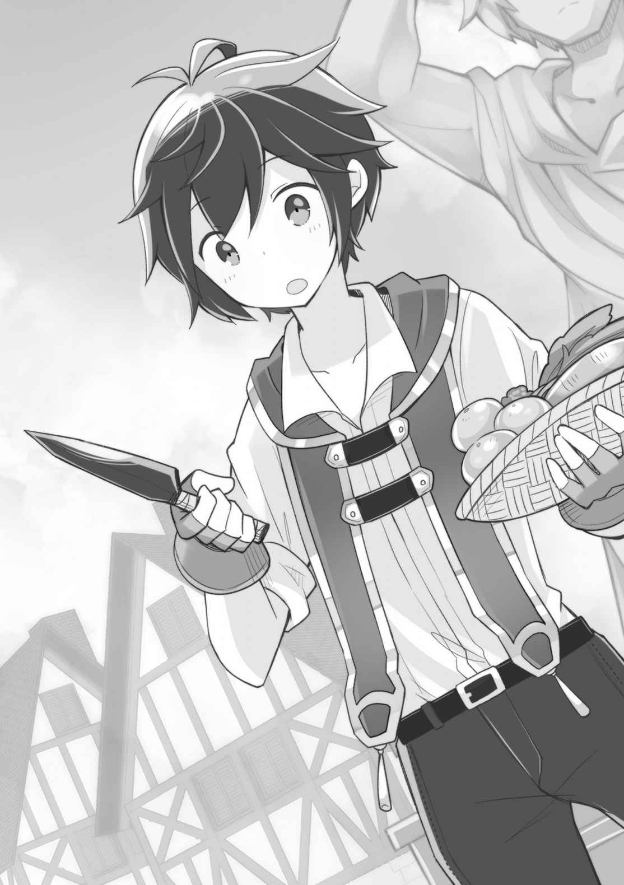
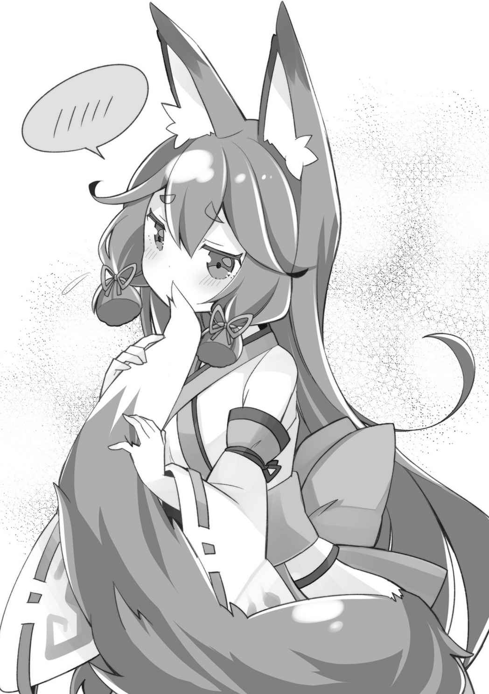
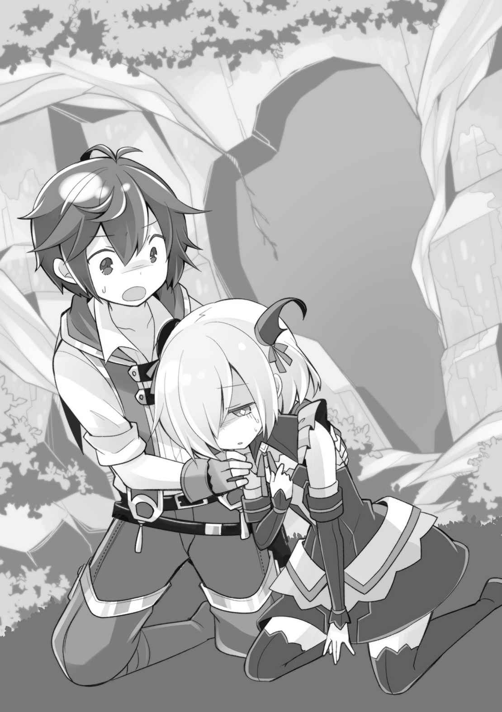

第一章
「来るとしたら、そろそろ……だな。毎年同じ時期なのは間違いないんだろ？」
「……うん、暖かくなってしばらくしてからだから」
俺の質問に、アビスが感情の読みづらい表情で答える。人造人間のアビスでも寒暖の差はわかるのかと、関係ないことを考えてしまう。
「……でも来ない年もあるよ。六年連続で来なかったこともあった」
そんな連続で来ないこともあるのか。世界中で祝福者が生まれることを考えると、アラミラの祝福者がどれほど珍しいものなのかがわかろうというものだ。
「一昨年は俺で去年はカエデ。二年続いたが、今年はどうなんだろうな」
胸に聖印が発現した子どもは、十二歳になる年の春に、神殿で「祝福の儀式」を受ける。それがこの世界の決まりである。
厳密には、神殿の勢力下にある国々の決まりといったほうが正確か。
本来ならば、そこで神官に神の名を教えてもらい祝福を得るわけなのだが、俺とカエデはそうならなかった。祝福の儀式は突然打ち切られ、猿ぐつわを嵌められ、黒ずくめの服を着た審問官の手で船に乗せられ、そして、絶海の孤島であるこの島に捨てられたのだ。
「マスタ、また子どもが捨てられたら……助けるんだよね？」
少しだけ不安そうな顔をするアビス。
この島で五十年以上も暮らしてきたアビスは、捨てられた子どもたちを毎回助けようとして、しかし一人として助けることは叶わなかったのだ。
一般的に、お印と言われる「聖印」が発現した子どもは、神殿で行われる行事に参加して神話や説法を聞いたりして祝福の儀式を待つ。俺は他に興味があることが多かったので何度もサボったが、妹なんかは真面目に参加していたものだ。
そして、その中で必ず神の敵である『悪魔』の話を聞く。
ファーレー教の神話。かつて、主神ファーレーと邪神との大きな争いがあり、その時に邪神側が繰り出し無辜の民を恐怖のドン底へと陥れたのが悪魔なのだ。
悪魔は「白い髪に白い肌。そして、ねじくれた角を持つ」という。それはアビスの特徴そのものだ。もちろんアビスは悪魔などではないが、わけがわからないまま唐突に島に連れられてきた子どもが、安心して打ち解けるのは難しい容姿だったに違いない。そうでなくても、この何もない島で子どもが生き抜くのは難しいを通り越して、無理というものだ。
俺は例外で、すでに祝福を得ていたうえに、そこそこ能力が育っていたからなんとかなったというだけだ。
「助けるよ。そのためにこの島に住んでるんだから」
俺はアビスの問いにそう答えた。俺がこの島を開拓している最大の理由は、そこにあるのだ。開拓村の能力があれば助けることができる。
「それにしても……いつまで続くんだろうな」
「……捨てる人がいなくなるまでは。もうずっと……きっと、私が目覚める前から続いてるんだと思うから」
「だよなぁ。五十年以上ってことは、誰か一人の独断でやってるんじゃなくて、組織ぐるみなのは間違いないしな」
そもそも神殿がこの島に子どもを捨てなくなれば、それが一番良いのだが、それをどうにかするのは難しいだろう。神殿は世界中の『祝福者』を統括する巨大組織で、強大な力を持っている。それと事を構えるのは、世界と戦うのと等しいことだ。
だが、捨てられた子どもを、人知れず保護することは俺にもできる。そのためには、この島を人間が暮らせる環境にまで整える必要があった。俺が連れてこられたこの島は文字通り「絶海の孤島」であり、人造人間のアビスだけが住む未開の地だったからだ。
最初の年。俺は生き抜くのに精一杯だった。アビスがいてくれなければ死んでいただろう。
二年目は少し余裕ができたが、まだ「開拓村」の能力頼みだった。
そして、今年は三年目だ。俺とアビスしかいなかったこの島も、今では五十名の大所帯。
この島を自分たちが安心して暮らすための国にするという目標は掲げた。さすがに、国という規模にまで開拓できるのは、まだまだ何年も先のことになるだろうが、最低限、俺抜きでも皆が生活を続けていける程度にまで開拓を進めたい。
冬の終わりに、翼人という背中に大きな一対の翼を生やした、まるで天使のような外見の種族であるリーベルたちが島の新たな住人となってから、何十人もの移住者への対応の忙しさもあり、あっという間に半月が経過していた。
まだまだ冬の名残が残っていたこの島にも、ようやく春の暖かさが訪れ、新たな一年の始まりを感じさせる。次の冬が来るまでに、みんなが暮らしやすくなるようしっかり開拓していきたい。
島に捨てられて丸二年。俺は十四歳になっていた。
「午前のパトロール終了～。今日も見渡す限りの海だったよ～」
綺麗な水色の翼を持つ、翼人のリーベルが俺の目の前に降り立ち、報告をしてくれる。彼女たち翼人は、毎日何度も空に上がり島の周りの海をパトロールしてくれており、神殿の船が近づいてきたら、すぐに知らせるように頼んであるのだ。
今、この島には五十人もの人間が暮らしているが、あくまで隠れ住んでいるのであって、誰にも見つかるわけにはいかない。神殿関係者に見つかるのは論外だが、ただの漁師に見つかるのですら危険だ。
あくまで、この島はただの無人島。そういうことにしておかなければならない。
だから、彼女たちのパトロールはこの島の生命線の一つだ。
空からのパトロールとはいえ、島の広さを考えるとかなり大変なはずだが、船の見逃しはないようにと念を入れている。なにせ、この島に人が住んでいるとバレてしまったら終わりなのだ。俺たちは「神殿が子どもを捨てに来る秘密の島」で暮らしているのだから。
「見落としはないように頼むよ。気付かないうちに上陸されちゃってご対面……なんてことになったら最悪だからさ」
「カイの心配もわかるけど、大丈夫だよ。私の能力でも船が来てないのをちゃんと確認しているしね！」
「リーベルがそう言うなら心強いけど」
彼女は「探し物の神ミスラ」の祝福者である。
その能力はそのまんま、探し物を見つけることができるというもの。
例えば「船」と漠然とした指定でも、能力を使えば範囲内にあるすべての船を見つけることができる。その探索範囲もかなりのもので、目視できる範囲全域だというから驚きだ。
しかも、彼女は翼人。空高く飛んだ状態での「目視範囲」は相当な広範囲に及ぶ。
あまり数が多いものを探そうとすると、頭がパンクした感じになるという危険な面もある能力のようだが、ここは洋上に浮かぶ孤島。その心配はない。
「でもさー、こんなに島広いんだし船が来ても陸に上がってはこないんでしょ？ だったら大丈夫じゃない？」
「確かに、ほとんど心配はないとは思うけどな」
この島は海に面した部分のほとんどが切り立った崖になっているうえに、島そのものも大きな都市がスッポリ収まるほど広い。海沿いに港でも作っているならともかく、船が来た程度で発見されてしまう可能性は低いだろう。
「でもさ、煮炊きの煙なんかがあるから。煙はかなり遠くからでも見えるだろ」
「そっか。確かにこんな大海原のど真ん中じゃねぇ。目立つもんね」
そういうわけで周辺警戒は重要なのだ。
人間の姿は発見されなくとも、誰かが生き残っている可能性を考えさせた時点で負けだと言ってもいい。神殿がアラミラの祝福者をこの島に捨てるのは、生かすためではなく消極的に殺すためであるのは間違いがないからだ。
生き残っているものがいるとわかれば、連中がどんな手段をとってくるのか想像もしたくない。神殿がその気になれば、あれだけの巨大な組織だ。この島そのものを消し去ることすらできるだろう。
「まあ、この時期さえ乗り切れば、そうそう近くに船が来ることもないだろうから、がんばってくれ」
「はーい」
リーベルが気楽な感じに返事をして、お風呂場へと飛んでいく。飛んだあとに入るお風呂は格別とのこと。空は地上よりも格段に寒いから、体が冷えるのだろう。
一人残された俺は、見渡す限りの水平線を眺めながら、前回訪れた街「ザックス」で出会った特級審問官──確かビーエと呼ばれていた──との邂逅について考えていた。
ファーレー教における審問官とは、つまり、異端──他教徒を審問する係に他ならない。
神殿……ファーレー教は今日では巨大な一大宗教だが、そうなる前には数々の土着信仰を神の名の下に葬ってきたという歴史があり、現在でもファーレー教にとって好ましくない、人物や書籍などは粛清の対象になると、子どもの頃、父親の書斎にあった本で読んだ記憶がある。あの男はそれを実行する人間だ。審問官になるための条件などは不明だが、なんらかの祝福者であると考えたほうが自然だろう。
あの時、俺が奴らにとっての邪神の祝福者だと気付かれていたのなら、それはつまり俺……島に捨てた子どもが生き延びていると、神殿にバレたということと同義だ。
そうなれば、この島にまで調査の手が伸びると考えるのが自然だろう。モンスターの蔓延る島だったのだから、それなりの戦力を用意して。
その時、魔法使いや神官を何人も連れて来られたら俺たちの現在の戦力では太刀打ちできない。まともに戦えるのは、同じく魔法使いであるアビスとレンだけだろう。
戦士君は一般兵に対しては強いが、魔法使いに対して決定力があるわけではない。
魔法使いの強さは文字通り格が違うのだ。搦め手でなら対処のしようもあるだろうが、現状そういう準備をしてあるわけでもない。
もし神殿に本当に攻めて来られたら。パトロールをいくら強化したところで、心の準備をするくらいしか今のところやれることはない。事実として、そうなのだ。
（だが、あの男に何かのスキルを使うような挙動はなかった）
結局、バレているのか、バレていないのかが問題だ。
祝福者がスキルを使う時は、必ず「スキル名」を口に出す必要がある。
あの男にそういう挙動はなかった。たとえ奴が『真実の神イデア』の祝福者だったとしても、能力を使われさえしなければバレる道理はない。だから心配はないはずなのだが──
「あいつの……あの瞳……」
あの男の、何の感情も読み取れない瞳。良く言えば澄んだ、悪く言えば温度のない虚空の瞳が脳裏にこびりついて離れない。
話している間、表情は終始にこやかだったが、その目は決して笑っていなかった。
二年前の祝福の儀式の時、二人いた審問官は独特の意匠が施された黒い頭巾をかぶっていたから、奴があの時の審問官のどちらかと同一人物かはわからない。
俺の聖印がなんの神のものかわからず狼狽える神官の肩を叩いたのは、そのうちの一人だった。そして一言「邪神」とだけ呟いたことは、忘れようにも忘れられない記憶だ。
その時の記憶にある声と、あのビーエの声は確かに同じ声だった……と思う。
司教の反応からして、特級審問官というのはほとんど数がいないのだろう。大聖堂のトップである司教よりも権能が高いとなれば、相当なものだ。
もし同一人物だったとして、たかが祝福の儀式にその特級である審問官が出てくるのか？ 特級と付くほどだ、上級や中級や下級だっているはずなのに。
俺をこの島まで連れてきた時の手際。
祝福の儀式を行う高位神官でも知らなかったアラミラの聖印を見分けたこと。
なにより俺の感覚が、あの男が俺を島まで連れてきた男と同一人物であると訴えていた。根拠は……無いに等しいのだが。
だから、その男から『カイ』と名前を呼びかけられた時は、後ろから心臓を握りつぶされたような心地だった。
あれは、俺という個人を指して呼んだわけではなく『伝承にある聖人カイ』のようだったと言われただけだ。俺と妹のルキアはファーレー教の聖人から名前を付けられたから、そういう偶然の一致もある。まして、あの街は聖人ルキアを祀っていたから、あの男からすると気の利いたことを言ったつもりだったのだろう。
「聖人カイの伝承って……どういうのだっけ」
記憶を探ってみても曖昧にしか覚えていない。他種族の解放のために尽力した人物だったはずだが、本で少し見かけた程度で詳しいことはわからない。父親がどういうつもりで俺にその名を付けたのかはわからないが、確かにあの時の俺は翼人を解放するために動く聖人カイのようだった……のかもしれない。
「そうだよな……きっと、それだけのこと」
あの祝福の儀式の時。控室では名前を呼ばれたはずだが、儀式の間では特に呼ばれた記憶はない。おそらく、流れ作業のように祝福だけ与えて、それで終わりだからだろう。
儀式が中断してからも、馬車に乗せられるまであっという間の出来事で、審問官が俺の名前などを確認するような時間があったとも思えない。
だから、アラミラの生き残りである俺が今でも島で暮らしていて、新しいアラミラの祝福者を保護しようとしているとは、知られてはいない。
知られていない、はずなのだ。
「……こんな風に心配になるのは……やっぱ怖がってるんだろうな。護るものが増えたし」
振り返り、自分の国を見る。
国だなんておこがましい、のどかな村だ。
まだ生まれたばかり、よちよち歩きの農村だ。
俺が少し間違えれば、簡単に蹂躙されてしまう、世界で一番弱く小さな国だ。
俺が護らなければならないものだ。
（あと……あの男、帝国がラベルダ王国に攻め込むと言っていたな……）
ラベルダ王国は俺の故郷だ。妹と父親が住んでいる。
当然、そちらも心配だ。できるなら飛んでいきたい。
そうでなくても、俺は無事なのだと知らせたい。
神殿が、同じファーレー教の神官である親父になんと説明したのかはわからない。
親父がアラミラ神やこの島のことを知っていたなら、話は早かっただろうが、それはないだろう。祝福の儀式を行った高位神官ですら、俺の聖印を見て狼狽えていたのだから。
普通に考えれば、もう俺は死んだことになっているはずだ。
だから、俺は生きていると。無事なのだと知らせたい。
「でも……難しいかな。まあ、神殿関係者が戦争でどうにかなる可能性は低いだろうから、無事を祈るしかないか……」
神殿は国家間をまたがって存在する組織で、戦争が始まっても中立となるか、『傭兵』として神官を貸し付けるかどちらかになる。そんな立ち位置で宗教弾圧みたいなことにならないのかと思うのだが、不思議と神殿の立場はかなり長い間、保たれているらしい。
それ以上に、未だにラベルダ王国がどこにあるのかもわからないというのもある。外に出るたびに、ある程度は情報収集しているのだが……。大きい港町を見つけることができれば、情報も入ってくると思うのだが。
（家族といえば、俺よりも先に、カエデの家族を探しに行かなきゃだしな）
カエデの場合は、実家の街の名前がわかっているし、場所の詳細はともかく、連れていくのはもう不可能な状況ではない。
カエデの実家は、ライムリーグ帝国の古都「ゴディエ」という街にあるということが判明している。帝国はかなりの領土を持つ大国のため、辿り着くのは一筋縄ではいかないだろうが、目的地がわかっているのだ。なんとかなるはずだ。
パトロールを強化して、なるべく煮炊きの煙を立ち昇らせないように注意して日々の生活をこなしていく。火に関しては、レンとアビスが炎の魔法を使うことによって、煙を出さないで熱を加えることが可能だったので、案外難しいことではなかった。
そこさえ気を付けていれば、基本的に島の外からは村が見られることはない。
島民全員、緊張感を持って過ごしてはいたが、船はなかなか来ない。
──一ヶ月程度もそうしていただろうか。結局その年、神殿の船は来なかった。
どうやら今年、アラミラの祝福者は出なかったらしい。
本来、祝福の儀式は「聖印」が出た子どもにとっては、晴れの舞台だ。不幸になる子どもが生まれることがなくて良かったと、俺は胸をなでおろしたのだった。
◇◆◆◆◇
神殿からの船を心配するよりも、少し前まで話はさかのぼる。
リーベルたちが村にやってきて、しばらくした頃。俺は彼女たちの住居用の素材確保のために、開拓村と島とを何度も往復し、必要な資材をかき集めていた。
開拓村はジワジワと成長を続け、木材や石材などの基本的な材料ならば、ある程度製材された状態で取り出すことができる。
そんな作業を繰り返し、一通り必要な素材を取り出し終え、エネルの屋敷の庭でエネルと二人で休憩していた時のことだ。
「カイ、まだこれ見てなかったよね？」
エネルがどこからかこぶし大の黒い塊を取り出し、テーブルの上にゴトリと置いた。
「村で採れた鉄だよ。天から降ってきた鉄で天降鉄って呼ばれてるみたいだ」
「あまふがね」
ずいぶんとファンタジックな名前になった。まあ、実際ただの鉄ではなく隕鉄なのだ。そういうこともありえるだろう。
手に取ると、石とは明らかに違い、ズシリと重い。
俺が前回の遠征で手に入れた隕鉄は、すべて開拓村に卸したのだが、この鉄はその時の鉄とほとんど同じ物のように見える。だが、一度村に卸したものは村で根付くまでは取り出すことはできない。だから、正真正銘この鉄はその時の物ではなく『開拓村で産出した鉄』なのだ。
「それにしても、元が隕鉄だってのは村でも伝わっているんだな」
「カイが隕鉄だって私に言ってたでしょ？ それなのに、村で採れるものが鉄鉱石になったり、まして砂鉄になったりはしないでしょ」
「それもそうか」
俺が村に卸した鉄は、リーベルたち翼人が俺と出会う前に見つけたもので、大きいもので人間の頭くらい、ほとんどはこぶし大サイズの隕鉄だ。
隕鉄──つまり、隕石の鉄バージョン。もちろん、それが宇宙から降り注ぐようになったというわけではなく、地面から生えてきて拾えるようになったということなのだろうか。
我が能力ながら、後付けで歴史が修正されている感がすごい。……まあ、隕石が降り注ぐ村に変化してもらっても困るけども。
開拓村は、基本的に俺の常識に左右される。だから細かい部分は、俺が望むような形に進化していく。ただ、逆に言えば、俺の意表を突くような進化の仕方はしないということかもしれず、メリットばかりとは言えない部分だ。
「まあ、それはいいか。どれどれ……」
エネルから受け取った鉄を手の中でこねくり回す。
ごつごつとした手触りの鉄の塊で、それ以上の情報は読み取れない。隕鉄というからにはリーベルたちが集めたものと、実質同じものなのだろう。隕鉄は純度の高い鉄だけでできていると聞いたことがあるから、素材としてはかなり優秀なはずだ。
問題は、この素材をどうするかなのだが──
「加工は始まっているの？」
「陶器を作る窯がたくさんあるからね。村人たちで試行錯誤してるみたいよ」
現在の開拓村の特産品の一つは「陶器」だ。
陶器を作る窯も複数あり、村人たちで試行錯誤を繰り返し、窯を大型化し効率を上げ、現在ではかなりクオリティの高い陶器を作っている。
そんな村人たちが新しい素材である鉄に飛びつかないわけがなく、現在はちょっとした鉄ブームに沸いているらしい。なかなか新しいもの好きな村人たちである。
ただ、陶器を焼くための窯と、鉄を溶かすための炉では全く違う技術が必要になるのだろうし、今後どうなるのか期待大だ。本当は俺が一から知識を授けられれば、それに越したことはないのだが、俺自身、鉄について特別な知識があるわけではない。熱して叩いて成型する鍛造と、溶かして型に入れて固める鋳造があるとか、その程度だ。
日本刀の作り方などは、テレビで見た知識が少しあるが、実際に触ったことがあるわけではないので、やれと言われてやれるものでもない。
あくまで、村人たちに自分たちで頑張ってもらうしかないのである。
「少しくらいは、なにか作れてる様子？」
「うん、カイへのお供え物として置かれてたから、貰ってくれば？ カイ像のとこ」
「お供え物か……」
開拓村ではカイという謎の神が崇拝されており、村の真ん中に陶像が建立されている。
……いや、謎の神ではない。俺をモチーフとした神だ。
エネルが俺の容姿の特徴を教えたからか、なんとなく似ていて、こそばゆい気分になる。まあしかし、俺へのお供え物なら貰ったっていいんだろうが……。
「とりあえず、様子見がてら行ってくるよ」
「はーい」
エネルの家を出て、村の中心部へ向けて歩き出す。
春のうららかな日差しの午後。開拓村は天気の良い日がほとんどだが、今日は特別気持ちがいい。こうして歩いていると、これが能力の中の世界だとは信じられないほどだ。
やわらかな風が頬を撫で、眼前に広がるミカン園の木々を揺らす。
先ほど、春といったが実際には春ではない。というか開拓村に季節という概念があるのかどうか不明だ。その部分にだけは俺の常識が反映されていないのか、開拓村は一年を通して収穫期であり、作物が採れない時期などは存在しない。
俺が「季節」を村に導入すれば季節ができるのだろうし、季節による文化が生まれたりもするのだろうから、一長一短だ。
もちろん、季節を村に導入する方法など見当もつかないわけだけれども。
「みんなオシャレになったなぁ」
すれ違う村人たちは、初期のころと比べ物にならないくらい、しっかりした衣服を身に着けている。染色も盛んで、ミカン染めによる自然な黄色はこの村のカラーだと言ってもいいほどに浸透している。ミカンが特産品だから、食べる以外にも利用されているのだ。
村人たちには俺の姿が見えないので気楽にどこにでも入ることができるが、彼らとコミュニケーションをとれないのは少し寂しくもある。
開拓村も一部だけ見れば、町と形容してもいいレベルにまで発展している。ワープ能力である「村の出口」を使う場合、任意の出口まで歩く必要があるのだが、小走りで数分かかる程度には敷地も大きくなってきている。
農産物は特産品のミカンを筆頭に、小麦やイモなど多様で、食べるものに困ることがないだろうし、陶器作りが盛んで働く場所も多い。もう開拓村などという言葉は不適切なほどだ。まあ、少し歩けばまだまだ閑散とした田舎ではあるのだけれど。
（さて、ここか）
のんびり歩いて村の中央広場にあるカイ像のところまで来た。
カイ神は、いたずら好きの若い男の神で、新しいものと美味しいものが好き──という設定らしい。というより、エネルがそう説明したのを村人たちが信じているのだ。
まあ、実際ほとんど合っているのだけど、やはり変な気分だ。
カイ像の前はいつもなにかしらの食べ物が供えられていて、俺も俺でたまに食べたりするものだから、村人たちにとって毎日のお供えは大事な行事の一つとなっているようだ。
（さて、鉄製品ってのは……おお……これか）
俺はそれを手に取った。
鉄の塊である隕鉄を、熱して叩き伸ばし板状にして、鋭さを出したもののようだ。グリップ部分も一体成型で、牛の革を巻き付けてある。つまり──
「……鉄のナイフか。ついにここまで来たんだな」
ズシリとした手ごたえと、鈍く輝くブレード。
石器しかなかった時代から三年。ついに鉄器時代の到来である。
おそらく、このナイフはちょうどいいサイズの隕鉄を、そのまま熱して叩き伸ばしただけの原始的な代物だろう。刃のつけ方もデコボコで、決してスマートなものではない。

だが、第一歩としては上出来だ。実用的にもほとんど問題なさそうに見える。
「あっ！ カイさまが来てる！」
「やべっ」
近くを通りかかった村の子どもが、こちらを指差して叫んだ。
俺の姿を見ることができない彼らには今の状態が、つまり俺が手に持っているナイフが、不自然に空中に浮かんでいるように見えるのだ。
今までにも、何度かそれで「カイ神が遊びに来ている」として、騒ぎになったことがあったのだ。まあ、だからって俺自身も特段気を付けてもいなかったけれど。
「なになに」「どうしたどうした」「カイ様が来ているって？」
ここは村の中央広場。すぐに人が集まってきてしまった。
カイ像の前で、お供え物のナイフが不自然に浮かんでいるわけで、言い逃れもできない。というか、コッソリとナイフを貰っていこうと思っていたのだが……。別に俺が来ているのを知られること自体は、全然かまわないのだけども。
「ほらほら、カイさまったらナイフ持ってるんだよ！ 気に入ったのかな？」
第一発見者の少年が、野次馬に説明する。
（ちょっとサービスしてやるか）
ほんの気まぐれで、ナイフを振って喜びを表現すると村人たちは「おおおお！」と沸いた。手を叩くもの、拝みだすもの、とにかく俺の名前を連呼するものと様々だが、彼らの中では俺は本当に神なのだ。こそばゆい気分だが。
ナイフを振りながら一歩踏み出すと、人垣が割れて道ができた。俺は来た道を悠々と歩いてエネルのところまで戻ると、エネルにナイフを見せびらかしてから村を出た。
しばらく後に、村でカイ神は刃物が好きという設定が追加され、村人たちの武器つくり熱が加速したという。
どうやら、ほんの気まぐれの行動で、新しい神話を作ってしまったようだ。
◇◆◆◆◇
いつ神殿の船が来てもいいようにと、島民全員が気を張っていた春が過ぎ、日差しの眩しい初夏がやってきた。
春の間はリーベルたちの家を建てたり、翼人たちが早く島に慣れるようにと動き回っていたが、そろそろ今年一年でやることを決めていきたい。冬の間は基本的に身動きが取れないので、秋までにだいたいの予定を終わらせる必要がある。
今年も島の外に出るのは秋頃になるだろう。
前回、冬の終わりに急いで島を出たのは、島で風邪が蔓延しているのに薬の一つもなかったのが理由だった。
今は全員完治しているが、そういうことがまたいつ起こるかわからない。
いろいろなことを、ちゃんと準備しておかなければ、こんな絶海の孤島ではすぐには対応できない。場合によっては手遅れになることも当たり前にありえるだろう。
モンスターだって島から一掃できたわけではないし、想定外の事故が起きることもある。
「俺がしっかりしなきゃな……」
いちおう、この島を国土として国を作っているのだ。
国というと大袈裟な気もするが、神殿のクサビからは解き放たれた共同体という意味では、小さくても国であるというのも、あながち間違いではない。
そして俺は国王。慣れないが、慣れなければならない。
「……というわけで、どういう対策をしておくべきだと思う？」
俺はテーブルの向かいに座るユーリに問いかけた。
彼女は今は亡きモンディアルという国の王女だったのだ。こういったことへの見識は深いだろう。しかし、ユーリは顎に手をやり思案顔だ。
「……難しいですわね。薬を常備するのが基本ではありますが、薬だけでは大ケガを負ったものを治すことはできないでしょうし。ケガの治療は、モンディアルでも神殿の神官頼みでしたので……。癒しの神の祝福者を招聘できれば良いのですが、祝福者は神殿に押さえられておりますし……」
「そこなんだよな」
この世界は、なまじ祝福なんてものがあるせいで、医療があまり進んでいない。
あくまで、神官に見てもらうまでの応急処置の技術がある程度だ。なぜなら、どんな大ケガでも「癒しの神」の祝福者が、その能力で治してしまえるからだ。
ケガを理屈抜きで治してしまう力は、俺の前世の世界でもなし得ない、文字通りの魔法なのだが、この世界ではそれが「普通」なのだ。それでは、手間暇かけて治す医療技術が発展する余地はほとんどないだろう。あるいは、局地的に技術を持った人がいる場所があったりするのかもしれないが……。
「祝福者を連れてこない限りは、医療に関しては薬でごまかしていくしかないか……」
「あの僧侶ちゃんという白い戦士君の能力ではどうなのです？」
僧侶ちゃんとは、戦士の種を何度か合成するとできる「白い種」から生まれる白い戦士君で、回復魔法らしきものを使ってくれる。
だが、この回復魔法。実際に使ってもらった感覚として「回復魔法」といっているだけで、実際にケガをした人に試したわけではない。ケガの治療も可能なのだろうか？
「誰かケガを僧侶ちゃんに治してもらった人いるのかな。ユーリ聞いたことある？」
「そういえばありませんわね」
「アビスは？」
俺は横に座りつつ、置物のように一言もしゃべらずにいたアビスに問いかけた。
アビスはまばたきもせず、こちらを見て一言だけ。
「……わかんない」
「そっかー」
となれば、実際に試してみるのが一番早いだろう。
「ユーリの言う通り、僧侶ちゃんが医者の代わりになる可能性は高い」
「どうやって検証します？」
「ケガを治してもらうしかないでしょ」
あまり率先してとりたい手段ではないが、仕方がない。
外に出て、近くにいた戦士君に呼びかける。
「戦士君、ちょっとこっち来てくれ」
「オサ？」
とてとてーと可愛らしい動きで駆け寄ってくる赤い頭巾の戦士君。オサオサと鳴き声に近い言語しか使わないが、こちらの言葉はだいたい理解できるようで簡単な指示なら問題なくこなすことができる。
戦士君は、エネルがくれる「創造の種」から生まれる謎生物で、俺の開拓村の能力の副産物的な生き物だ。種から生まれるからか植物に近い性質があり、土に埋まることで自家繁殖で増えていく。
元々、エネルからもらった「創造の種」はそう多くなかったのだが、去年くらいから戦士君は数の把握が困難な程に増えた。今じゃ戦士君用の畑があるほどだ。
俺は、近くに来た戦士君の頭を撫でて指示を出す。
「僧侶ちゃんを呼んできてくれるかい？ 白い頭巾被ってステッキ持ってる戦士君」
「オサ！ オッサ！」
ピシッと敬礼をして、走り去る戦士君。
闇雲に探し回るのか、それとも仲間と連携するのかと少し興味があったが、戦士君はものの数分で僧侶ちゃんを見つけて戻ってきた。
「オッサー？」
ステッキを持った白い戦士君こと僧侶ちゃんが首をかしげる。赤い頭巾の戦士君は、オサオサとまたどこかへ走り去ってしまった。
「それでどうなさるのです？ なにか植物とかで試してみますか？」
「植物？ いや、そんなまどろっこしいことはしませんよ。こうすればすぐですし」
「キャッ！ カイ様、なにを……」
俺はナイフを取り出し、軽く自分の腕を切りつけた。
ほんの薄皮を切り、ギリギリ血が出る程度の傷だ。
「ユーリは大袈裟だな。さて、僧侶ちゃんこの傷治せる？」
「オサオサオサー！」
僧侶ちゃんが傷を見てピョンと飛び上がり、ステッキを振った。
たちまち、輝くもやもやが傷口を包み込む。
「おお……！」
まず始めに痛みが消え、そのあと徐々に逆再生、あるいは早送りにしているかのように、傷がふさがっていった。やはり回復魔法、それもちゃんと傷を癒せるものだ。
「僧侶ちゃん！ やっぱり傷も治せるんだな！」
「オッサオサー♪」
俺の傷がすべて治ると、僧侶ちゃんは嬉しそうにピョンピョンと跳ねた。
「……すごいですわね。これではカイ様の祝福が癒しの神の祝福も内包しているようなものではありませんか」
ユーリが驚きの言葉を口にする。
実際、アラミラの祝福……特に俺の『てのひら開拓村』は自分でも特別だと感じる。
だからこそ、神殿はアラミラの祝福者を無人島まで捨てに来るのだろう。
「うーん。さすがに本職ほどの回復力はないんじゃないか？ あれくらいの傷で二十秒くらいかかったわけだし」
「オサ？ オッサ！ オサオサオサオサ！」
「ん？ どうした僧侶ちゃん」
僧侶ちゃんが、文句を言いたげに袖を引っ張る。
「オサオサオサオサ！」
短い両腕をパタパタさせて、オサオサ大連呼だ。
「なにか、言いたいことがあるみたいですね……」
「そのようだけど……」
困った。なにか異議を申し立てたいようだが、なにを言いたいのかわからない。こんな時にレンはどこに行ったんだ。唯一の通訳係なのに。
俺とユーリが困っていると、さっきの赤い頭巾の戦士君が戻ってきた。どこに行ってたのかと思ったら、なんともう三体、僧侶ちゃんを連れているではないか。
「増えてる？」
いや、戦士君は増える。そんなことはわかっていたのだけど、普通の戦士君より相当にレア感がある白戦士の僧侶ちゃんも増えるとは意外だった。
「オッサー。オサオサ」「オサ？」
「オッサオサ、オサオサ」「オサ！ オサオサ～」
四体もの僧侶ちゃん同士がコミュニケーションを交わしている。
あまりにまどろっこしいので、赤い戦士君にレンを連れてくるように頼むと、わりと近くにいたのか、すぐにレンはやってきた。
「なになに？ どうしたんですか、マイロード」
「いや、それがな」
レンに事情を説明すると、僧侶ちゃん達が食い気味にレンに詰め寄ってきた。
オサオサとやかましいが、普段、比較的規律正しい戦士君族にしては珍しい光景だ。もしかすると、上位の戦士君になるほど自我が強いのかもしれない。現在の最上位である金戦士君のレンなんて、いきなり獄炎の大魔導師を自称したほどなのだから。
「オッサー、オサオサ、オッサオサ」
「うん、うん。なるほど。そうだねー」
レンが僧侶ちゃんから説明を受け、俺に説明したところによると──
「要するに、回復魔法の威力はまだまだこんなもんじゃない、と僧侶ちゃんは言いたいってこと？」
「そうみたいですよ。四人いれば四倍の力を発揮できるって言ってます」
「なるほど」
僧侶ちゃんは一人で運用するものじゃないということなのだろう。考えてみれば、戦士君だって、一体で動かすということはほとんどないのだ。
「じゃあ、試してみるか」
「どうするんです？」
「こうする」
俺はナイフで自分の腕を切りつけた。鋭い痛みと共に血があふれだす。
さっきよりも深い傷だ。自然治癒ならば完治までに数週間かかるかもしれない。
治るとわかっていれば、ちょっと傷を負うくらいは平気だ。
ただ傷の治りだけを見るならば、動物なんかで試したっていいのだが、自分で試してみなければ、わからないこともある。案外、そういうことが重要だったりするものだ。
「カイ様！ そんなッ、ああ、血がこんなに……ッ。僧侶ちゃん、はやくっ、ああ……」
かなりドバっと血が出たからか、ユーリが動転して血がつくのも厭わず、傷口を素手で押さえてくれる。気持ちは嬉しいが。
「オッサー！」「オッサー！」「オッサー！」「オッササー！」
周りに集まった僧侶ちゃん達が、ステッキをくるくると回して回復魔法を発動させる。
光るモヤモヤが四体分集まり、傷口へまとわりつく。
「お……おおおおッ！」
四倍の速度は伊達ではなく、自分でやっておきながら「やべぇ、やりすぎた」とすら思った深い傷が、ものすごいスピードで塞がっていく。回復とか癒しなどという生易しいものではなく、強引に『修復』していくという表現がピッタリくるほどだ。
「オッオサー！」
「すげえ！」
あれだけ深い傷だったのに、、魔法発動から十秒程度で完治してしまった。僧侶ちゃんが四体いたとはいえ、すさまじい効果だ。これならば癒しの神の祝福者がいなくても、致命的なことにはならないかもしれない。致命傷まで治せるかはわからないが、この速度ならば、かなりの深手でも治癒できるはずだ。
「いやぁ、本職には敵わないなんて言ってゴメンな、僧侶ちゃん。これなら本職以上だよ」
「オッサ！」
えへんと胸を張る僧侶ちゃん。実際、本当にこれで懸念の一つがなくなったといっていい。さらに、僧侶ちゃん自身も繁殖（？）して増えていくのだから、時間が経つほどに、回復要員が増えていくのでなおさらだ。
「これからは、僧侶ちゃんたちはなるべくいっしょにいるように。それで、島でケガ人が出たら治してあげてくれ」
「オサ！」
俺がそう告げると、僧侶ちゃん達は、もう用はないとばかりに走っていってしまった。癒すのが使命なのだと、ケガ人を探しに行くのだろうか。不思議な生態だ。
「カイ様！」
「えっ、どうしたのユーリ。そんな怖い顔して」
「……もう、あんな無茶はもうなさらないでください」
うつむき、傷口があった場所に控えめに触れながら、そんなことを言う。
温室育ちのお嬢様だったユーリには、あの程度でも刺激的だったのだろうか。
「いや、またやるかも」
「ど、どうしてですか！ あなたは王なのですよ？ あなた自らなさらなくても、私でも誰でも代わりはいるではありませんか？」
確かに俺が自らやることに合理的な理由はなかったのかもしれない。なんたって痛いし。
俺は仮にも王なのだから、こういう時に配下を使うのも王の器量というやつなのだ。少なくともユーリの価値観では。
「俺はねユーリ。自分でできることは、なるべく自分でやりたいんだ」
「なぜです？ 自ら傷を負う必要などないではありませんか！」
思ったよりも食い下がってくるユーリだったが、ここは引けない部分だった。
「この国は俺がいなくなったら終わりだろ？ 少なくとも今はまだ。だから、俺は絶対に死ねない。だから、本当に戦闘になったら誰かに護ってもらって後ろに引っ込んでいることになる。ユーリの祝福に護ってもらうかもしれないし、アビスやレンに護ってもらうかもしれない。とにかく俺は戦えないだろう？」
「それは当然ではありませんか！ 王なのですよ？」
「かもしれない。だからこそ、俺が自分の体を張れる時は張りたいんだよ。じゃなきゃ、全部人にやってもらうだけになってしまう」
ただの我が儘なのかもしれない。
自分のやりかた。自分の価値観が常に正しいということはありえない。まして、俺は転生者だから、中途半端に前世の価値観を引きずっていて、それがこの世界でも正しいとは絶対に言えない。だけど、自分が納得できないことをするのも嫌だった。
「……カイ様がそうおっしゃるのなら……。でも、こういう無茶はなるべくなさらないでください。あなたが、あまりご自身のことを顧みないのが不安なのです」
「ふふ、俺は十分怖がりだよ。少なくともこの命を手放すつもりはないから」
「そんなの、誰だってそうですよ……。やっぱり、あなたは少し変です」
「ひどいな」
でもまあ、変には違いない。
転生者なんてものが変でないはずがないのだから。
ユーリとの話の後、レンを連れて開拓村に訪れた。
これからのことを考えると、いろいろと考えていかなければならないことがあった。
「それにしても、ユーちゃんはマイロードにゾッコンなんですね～」
「ん？ ユーちゃん？」
村に移動してすぐに、しみじみとした様子で言うが、ユーちゃんって誰だ？
「ユーちゃんはユーちゃんですよ」
「ああ、ユーリのことか」
確か、ユーリも自分のことをユーちゃんと呼べとか言ってたことがあった。だが妹を思い出す響きで、その呼び方は避けていた。
「……どうなんだろうな？ ユーリは俺にはもっと王らしくなってほしいと思っているだけなんじゃないか？ 好きとかどうとかってのは違うような気がするんだよな」
「あっはっは、さすがマイロード、鈍感ですね！ それとも、わかってて言ってるんですか？」
レンは笑うが、だが本当にユーリの考えは底が知れない。優しい子だとは思うけど。
「私もテレビで見ていたよ、カイ！ 鈍感！ アホ！」
「すげぇ直球でディスられてる！」
エネルまでやってきて話に加わってきた。いきなり罵倒から。
「まあねぇ、私とコロモはカイの常識ベースで作られた存在だから、あんまり常識がどうのって言えないんだけどさ。でも、普通女の子は好きでもない男の血は触れないと思うよ」
「その常識の時点で、すごく前世の日本人的なんですが、それは」
血が汚いとか穢れだとか、俺は感覚的に理解できる部分だが、ユーリにそれが当てはまると思えない。そりゃあ、嫁だなんだと言い出すくらいだし憎からず想ってくれているのはわかるが、彼女はそれ以上に、元王女としての矜持、立場、今この島にいる元国民のことを考えて行動している節がある。
別にそれが悪いというつもりもないし、なんとも思っていないが、この特殊すぎる環境に胡坐をかいて関係を作る気には、どうしてもなれなかった。
「まあ、俺とユーリのことはいいんだよ。それよりレン、確認したいことがある」
「なんですか？」
「白戦士君……僧侶ちゃんは一人でも増えただろ、レンもレンだけで増えるのか？」
当然の疑問だ。レンだって種から生まれた戦士なのだから。他の戦士君たちと、生まれに違いがあるわけじゃない。種は金色だったが。
だが、レンは少し驚いた顔をして、抗議してきた。
「増えるわけないじゃないですか！ マイロードは、わたくしちゃんをなんだと思っているんです？」
「増えないんだ……」
ある意味残念。まあ、さすがにレンが増殖したら強すぎだけど。
「じゃあ、どうやって増えるんだ？ 増えるというのも変かもしれないけど……」
俺の何気ない質問に、レンは顔を赤くさせた。
「……マイロード。それって繁殖って意味？」
「繁殖？ えっと、そうなのかな」
レンは美少女な見た目だが、キツネ耳とフサフサの尻尾をもっている獣人だ。人間だとあまり繁殖という言葉は使わないが、レンの場合はどうなのだろう。
種から生まれたという点では、他の戦士君と変わらないはず……なんだがなぁ。
「カイったら、女の子にずいぶんなこと聞くのね。私が教えてあげようか？」
「えっ……あっ！ ってそうなの？ そういうこと？」
いや……まあ、増える方法があるとするなら、そうなのか？ 繁殖って……とんだセクハラ野郎になってしまった。
「……増やせるかどうか……試してみます？ マイロード」
恥ずかしそうに尻尾で顔を隠しながら、そんなことを言うレン。
「バカなこと言うなって……。コホン、まあその話は置いといてだな。創造の種のことなんだよ」

「逃げたな」
「逃げましたね」
やかましいわ。
「ええとだな、僧侶ちゃんが一人でも増えたことを考えると、新しい子もなるべく作っておいたほうがいいと思って訊いたんだよ。うん」
前に手に入れた「てのひら開拓村」の新しいスキル「種合成」で、エネルから貰える創造の種を合成できるようになったのだが、最初に貰える赤色同士を掛け合わせると紫に、紫同士で黒に、黒同士で白い種が生まれるところまで確認できた。
その白い種で生まれるのが、先ほどの僧侶ちゃんなのだが、一個前の黒い種はまだ植えておらず、なにが生まれるのか確認できていない。
「確かにね。っていうか、もとの戦士君を種に戻して合成に使えばいいんだよ？ たくさんいるんだから。今もう、三〇〇超えてるんじゃなかった？」
そう、戦士君はたくさんいる。ネズミ算的に増えるわけではなさそうだが（そうだとしたらもっと莫大な数になっているはずだ）、それでもかなりの数だ。
戦士君を種に戻すのも確かに可能だ。傷付いたときなどは、自分で種状態になって休眠するし、任意で種になることもできる。だが──
「正直、ちょっと抵抗あるだろ、それ」
「ん～？ 別に命がなくなるわけじゃないし、問題ないない。そもそも戦士君自体が個性ある存在というより、一種の群体なんだから。個であり全、全であり個なんだよ」
「難しい言葉でごまかされているような気もするが……。本人に確認とってＯＫだったら、ということにしようか」
「優しいんだか、なんなんだか。これはユーリさんも手こずるわけだね」
「なんか言ったか」
「いーえ、なんにもー」
種化の是非はともかくとして、できることはどんどんやっていきたいというのはある。僧侶ちゃんも、現状で四体だが多ければ多いほど国としては安定するのは間違いないのだ。人口に対しての外科医の数みたいなものなのだから。しかも、手術に薬も道具も手術室も必要ない奇跡の担い手。体力の回復だってできるのだから有能なんてレベルじゃない。
「じゃあ、わたくしちゃんは戦士君たちに上位職になりたいか訊いてきますね！」
「その訊き方は語弊あるんじゃないか……？」
「大丈夫、ちゃんと訊きますって。それに戦士君たちはああ見えて、ちゃんとわかってるから大丈夫ですよ。マイロードよりずっと大人です」
「そうなんだ……」
俺には戦士君語はわからない。だからレンがそう言うのならその通りなのだろう。
いずれにせよ、戦士君の説得はレンに任せることにして、俺も一度開拓村を出た。村の見回りのために歩いていると、上空からリーベル達翼人がこちらに向かって急降下してくるところだった。今日は朝の報告はもう受けているが……なんだろう？
「カイ～！ 大変大変大変たいへーん！」
「どうした！」
「船！ 船が近くまで来てる！」
「船？ 嘘だろ、こんな時期に？」
一瞬で脳内に嫌な想像が駆け巡る。
この時期に船が来たのなら、アラミラの祝福者を乗せた船ではないだろう。あれは祝福の時期に限定されるとアビスも言っていた。今はもう初夏。時期外れすぎる。
────もし、神殿がこの島へ戦闘員を送り込んできたのだとしたら。
（戦えるのか？）
まず、超強力な魔法使いであるアビスとレンだけでも、かなりの戦力だ。
船が近くに来た時点で遠距離から炎の魔法をつるべ撃ちにすれば、それだけで勝てる可能性がある。だが、あくまでそれは可能性だけの話。
もし相手の魔法使いの数がこちらより多ければ、かなり苦戦するだろう。もちろん負ける可能性もある。敵の数もわからない。
やつらにとって、アラミラの祝福者がどの程度の重要度なのかにもよる。絶対に消したい存在なのだとしたら、相当な戦力を送り込んでくる可能性もあるし、なにより未知の祝福者が来た場合、一方的に負ける可能性も否定できない。
俺の祝福の能力が異常に汎用性が高いように、神殿が隠匿している祝福にも、なにか無敵に近いような能力がないとも限らないのだ。
「カイー！ どうする、どうするの？」
「まっ、待て、落ち着け。船ってどんなやつだ。距離は？ 何隻だ？ 祝福者は？ 魔法使いは乗っているのか？」
「えっ、えっ、そんないっぺんに言われてもわかんないよ！ カイも落ち着いて！」
俺がこの島に来てから、近くまで船が来たのはカエデの時以来だ。
ついテンパってしまったが、こんな時こそ落ち着かなければ。
「悪い。……それで、今わかってることは？」
「船は一隻だけ。まだギリギリ見えるくらい遠くで、祝福者も魔法使いも乗ってないと思う。ちっさい船だよ」
その答えを聞き、最悪の想像もしていた俺は、膝から崩れ落ちそうになった。
まだわからないが、少なくとも大戦力で攻めてきたということはなさそうだ。
「距離はかなり離れてるんだよな？ ちょっと見てみたい」
「あっ、空中ブランコします？」
「そうだな、頼む」
翼人の空中ブランコとは、座った状態で五名の翼人に紐で吊り上げてもらい空を飛ぶという、前世で見た古い妖怪アニメさながらの乗り物である。空中ブランコと呼ぶのが正しいか、翼人パラグライダーと呼ぶのが正しいか……どちらでもいいことだけど。
リーベル達が島に来てから、何度か乗せてもらっていて、だんだん慣れてきたが、やはりどうしても足が竦む。高所に対しての原初的な恐怖感というやつだろうか。
翼人たちに吊り上げてもらい相当な高さまで到達し、リーベルが指さす方向を見るが、全く見えない。視力は良いほうだと思うのだが……。
「もう見えてるよ！ あそこ！ カイ、見えない？」
「うーん、全然見えない……」
こりゃ望遠鏡でも買ってこなきゃダメだ。次の遠征で買おう。売ってるかどうかは知らないが、望遠鏡自体はそこまでハイテクな物ではないはず。
というか、こっち側を見られている可能性もゼロじゃないだけに、この遠見も多少はリスクがある。だが、なにもせずいられるはずもない。
「こっちに近づいてきているのか？」
「うーん？ 近付いても来ないけど、離れてもいかないかな？ なんか網を海に投げてるみたい」
「網？」
網……網って……。漁？ 漁船ってこと？
「リーベル。もう一度確認するけど、祝福者も魔法使いも乗っていないんだな？ 乗員の数はわかるか？」
「えっとー、ちょっと待ってね。『鵜の目、鷹の目、神様の目！』」
リーベルが祝福のスキルを発動させる。
「うーん……人間が五人……だけみたいだよ、カイ」
断定するのは危険かもしれないが、これはどう考えてもただの漁船だろう。
リーベルが来てからパトロールを開始したが、それまではもちろんパトロールなんてしていなかった。見える範囲の海を見る程度のことはしていたが、それだって毎日欠かさずに三六〇度監視していたわけではない。
「……とりあえず、一回降りる」
「え、もういいの？ 近くまで行ったり、攻撃して沈めたりとかは？」
「今のとこは、しないよ」
ずいぶん好戦的だな、リーベル。そりゃあ先手を打つのは大事なことかもしれないが。
下に降ろしてもらってから、これからどうするかの指示を出す。
「あの船が漁船か、それとも漁船のふりをした偵察船かはわからない。だけど、偵察船を使うほど連中が慎重にやる可能性は限りなく低いと思う。だから、リーベルたちは交代であの船が近くに来ないかだけ、見張っててくれ」
「それだけでいいの？」
「さすがに上陸してくるようだったら、考えなきゃならないけどね。見つからないようにしてれば大丈夫だよ。だからリーベルたちも、不自然に集まって飛んだりしないようにね」
「了解したよ！」
リーベルたちが敬礼して飛び立つ。俺はその場に座り込んだ。
（近くまで魚を追ってきた漁船で間違いない）
実際、神殿が攻めてくる可能性があるとは考えていたが、でもやっぱり現実的にはないと心のどこかで思っていたのだろう。
俺は、近くに船が現れたことに想像以上の衝撃を受けていた。
この島は隔離されているし、他の陸地までの距離もある。
だから、一種の聖域のようなものだと無意識的に考えていたのだ。神殿の船だけが秘密の航路を知っていて、それ以外の船は辿り着くことができない……というような。
（だが、実際には違った）
あの漁船は、少なくともここに島があることを確実に知っている。
偶然ここまで来たと考えることもできるが、距離的にあり得ないだろう。すでに目視で確認できる距離なのだから。
いま翼人たちが監視しているが、どうか近くにまで来ないでくれと願わずにはいられない。
場合によっては、船を沈め、漁師も返すわけにはいかなくなってしまう。
そして、そのまま数時間。
ジリジリと船の動向に気を取られつづけたが、結局船は外海へ向けて出航していった。
俺はホッと胸をなでおろしたが、今回のことで「今攻め込まれたら詰む」可能性をリアルに感じざるをえなかった。
あまり優先順位を高く設定していなかった島の防衛について、しっかりと考え直そう。
そう決意した俺なのだった。
◇◆◆◆◇
次の日。俺はまた開拓村に訪れていた。
昨日、漁船が近くまで来た事件があったおかげで、島の防衛について真面目に対応していこうと決意を新たにしたのだが、まずは新しい戦士君を生むことからだ。
レンが戦士君に「種化」の相談をしたところ、戦士君はあっさり了承したらしい。どうやら彼ら的には上位種になれるなら是非もないということらしい。
意外と上昇志向が強かったようだ。
そして、今、俺の手には五十個の赤い創造の種がある。種化を承知した戦士君達が種に戻った姿だ。
「とりあえず、エネルと一緒に合成しよう。エネルー？」
家の前で呼びかけても、なかなかエネルは出てこなかった。
いつもなら、呼ばれなくてもすぐ出てくるのに。
「エネル？」
俺が部屋のドアを開けると、パーンとクラッカーの破裂音が鳴った。
「パンパカパカパカパンパカパーン！ カーイ！ おめでとう！ つ・い・に！ レベル30達成だよ！」
「カイさーん！ おめでとうございまーす！」
「えっ、えっ、レベル30？」
エネルとコロモが、拍手喝采でお祝いしてくれる。よく見るとパーティの準備までしていたのか、テーブルにはごちそうが並べられていた。
いきなりのことで面食らったが、30となれば節目の数字だ。
お祝いくらいしても、おかしくない。
……しかし、レベル30か。
なるべく、開拓村の前の立て看板は見るようにしているが、ついこの間まで28あたりで伸び悩んでたような記憶だったのだが。
「鉄が普及したし、元々村に鉄を加工できるだけの素地ができてたから、一気に上がったみたいだよ」
「加工できるだけの素地……？ 陶器を作る窯があったからか」
「それもあるけど、どっちかっていうと魔導師のほうかな。看板、まだ見てないんだよね？ ちょっと見てみる？」
俺はエネルと表に出て、入り口にあるちょっとサイバーな看板を確認した。
──────────────────────
☆☆☆ てのひら開拓村 ☆☆☆
おめでとうございます！
開拓村が『獄炎魔導師の村』になりました！
『スペシャルショッピング』の機能が解放されます！
現在のレベルは 30 です。
村の名前は『ハスクバーナ村』です。
開拓度は『獄炎魔導師の村』です。
ＮＥＸＴ ＬＥＶＥＬ ： 魔道具の誕生
──────────────────────
「創造の斜め上に進化してる！」
「ねー。お姉さんもビックリだわ。なんなの獄炎魔導師の村って。完全にレンちゃんの影響でしょ、これ」
「あいつ、けっこう『獄炎の大魔導師』だって自己紹介してたもんな……」
そこも驚きだが、新しい機能も解放されている。
「スペシャルショッピングってなに？」
村でのショッピングだろうか。確かに村にはお店が出来始めている。だが、村で手に入るものは大抵、そのまま取り出せるのだから、そういう品のことではないだろう。
「村も大きくなって、前みたいに住民も食べることが一番の関心事ではなくなってきているのはわかるかい？」
「そうだな。服なんかも、オシャレになったし、心なしか体格も良くなった気がする」
「でしょう？ そうすると、遊びやチャレンジの余地ができてくるよね。名工と言われるような人が生まれたりもする。そういった人達の間で、意図的か偶然かたった一つだけできたアイテムを買うことができるのが、このスペシャルショッピングなのさー。こないだの、お供え物のナイフみたいなものが買えるってわけ」
「なんか良さそう！」
あんまり想像力が追い付いてないけど、要するに「偶然すげーのできちゃった」のを買うことができる機能ということだろう。前世でも、現在でも作成できないような太古の昔に作られた工芸品が残されていたりしたものだ。どんな品が並ぶのか楽しみだ。
「もうなんか買えたりするのか？ どこで買うの？」
「んーにゃ、今はまだ。物は私が預かっておくから、新しい商品が出たら教えるよ」
自分の能力の中の村で、能力の中の人であるエネルにお金を払って買い物をするというのは、なんともいえない感覚だ。俺が払ったお金はどこに消えるのだろう……。
「あっ、そういえば何で支払えばいいんだ？ お金……いや、通貨かこの場合」
「金貨じゃないかな」
「金貨かぁ……」
前に、「開拓村に金をたくさん入れたら金が根付いて、いくらでも取り出せるようになるのでは」と狡い考えを持ったことがあったが、自分の中での「金」＝「金」の図式が大きすぎたのか、普通に貨幣として流通してしまった。
まあ、過ぎたことは仕方がない。また、外に出たときに、なにかを売って金を手に入れてこよう。
エネルとコロモと三人での、ささやかなお祝いパーティをしてから、開拓村を視察した。村のレベルが上がって、どう変わったのかを確認したかったからだ。
開拓村ことハスクバーナ村はかなり敷地面積が広大化しており、全部を見るのはもうそろそろ難しいかもしれない。なにせ、総人口はもう六五〇人にもなるのだ。前世におけるちょっとした学校の全校生徒数と同じくらいだろうか。こうなってくると、ヨチヨチ歩きの島とは違い、俺が何かを手伝ったりしなくても勝手に歩いていくだろう。文明は前に向いて進んでいく。もう助走期間は終わったのだ。
「とはいえ、大きい変化があるはずもなし……か」
前回、カイ像からナイフをもらってきた時から、二ヶ月程度しか経っていない。だが、開拓村の中では俺が中にいる時を除き、数倍の速さで時間が流れているのだ。こちら側では、すでにあれから数年の時が経っているのかもしれない。
「お、鍛冶屋があんな場所に」
村の中心あたりにたどり着くと、煙の上がる一画が目に留まった。
中から金属の打ち合う音が聞こえてくる。すでに、この村の鉄は『特産品』となっているのだ、当然、それを加工する場所もあるというわけだ。
中を覗き込んでみると、俺が想像していた鍛冶風景とはだいぶ違う風景が繰り広げられていた。
「オラオラ！ どんどん叩くんだよ！ 冷めちまうだろ！」
「はいっ！」
カーン！ カーン！ カーン！ カーン！
「よし、こっちに戻せ。行くぞ！ ファイアー！」
「うおおお！ 親方すっげえー！」
…………なにこれ。
いや、鉄を熱して叩いてるんだよ。それはいい。とても普通だ。
だけど問題の鉄を熱する方法が……魔法だ。
革のローブを来た人物（これが親方らしい）が、手のひらをかざし、鉄に向けて高温の火炎を放射し鉄を熱し、柔らかくなった鉄を弟子が叩く……という工程らしい。
鉄はかなり熱くしないと加工に必要な柔らかさにならないはずだから、あの魔導師の魔法はかなりの高温の炎を発生させているということ。さすが、レンによって魔法が伝えられただけはある。
俺はしばらく作業風景を眺めていた。
ローブを着た親方一人に弟子が八人もいる。どうやら、鍛冶屋は今この村でもかなりホットな職業なのは間違いがなさそうである。
休憩時間になると、親方である魔導師が外に出てきた。
服装だけ見れば完全に魔法使いだ。臙脂色に染めた革のローブを着た姿は鍛冶屋のイメージからは程遠い。
さすがに暑かったのか親方がローブを脱ぐと、中に着ている服は和装だった。これもおそらくレンの影響だろう。
中に入って、作っている品や完成品と思しきものも見てみたが、まだまだ、隕鉄を成型させただけの品物が主体のようだ。
鉄ではなく「鋼」が産業として大きくなるのは、もう少し後のことになりそうだ。
エネルのところにまで戻り、見てきたことを話す。
「おー、鍛冶屋ね。あれって、鍛冶屋兼魔導師らしいよ」
「それはわかるけど、魔導師って具体的になにかやる職業だったりするのか？」
例えば教師ならなにをする職業かすぐわかる。だが、魔導師と言われてもピンと来ないだろう。魔法を研究する人なのかな。魔を導く師ということで。
だが、エネルの答えはもっと直接的なものだった。
「魔導師は村の戦力だよ。外から敵が来たら戦うの。だから、村ではかなり尊敬されているみたいだよ」
「ああ、なるほど。あれだけの炎の魔法が使えるなら、そりゃそうなるか」
火で焼かれるとは、戦う相手が気の毒なほどだ。
まだまだ開拓村のある世界は文明度が低い。戦いとなれば、肉弾戦がメインだろう。そんな中で、炎の魔法を極めたハスクバーナ村の魔導師はどんな扱いになるのだろう。
どんな屈強な男でも、一対一で勝てる道理はないのではないか。弓などの遠距離攻撃を駆使すれば、どうにかなる程度で。
「なんにせよ、村にとっては勇者みたいなものってわけだ」
「『獄炎魔導師の村』ってくらいだからね」
鍛冶屋と魔導師がミックスされたのは想定外だったが、鉄も普及して、開拓村は問題なくレベルアップしている。もちろんまだまだ足りないものはあって、外にそれを求めに出る必要もあるだろうが、時間を掛けてじっくり育てていくターンに入ってきた感触がある。
どんなゲームだって、最初期はやることが多くて忙しいものだが、レベル30ともなればまた別のプレイングが必要になるものなのだ。
「そうだ！ さっき渡し忘れてたけど、私からレベル30のお祝いあるんだった！」
エネルが思い出したかのように言う。
「と、言っても、そう大したものじゃないけどね。はい、どうぞー」
どこからともなく大きめの巾着袋を取り出して、ずいっと手渡してくる。
中を確認すると、
「おお！ 種じゃん。今一番ホットなアイテムだよ、これは！」
「そうなの？」
「だって、今日は種合成をやるために来たんだからさ。レベル30のどさくさで遅くなったけど」
エネルが渡してきたものは創造の種だった。しかも、赤が十個、紫が三個、黒が一個。
「黒があるじゃん！」
「あるよー。黒はまだ植えてなかったんだっけ？」
「そうなんだよ。何が生まれるのか確認してない」
「じゃあ、植えてくる？」
「……いや、今日は合成をできるとこまで試すつもり。白の次までやれるだろう。もちろん、黒も一つは残して植えるけど──ちょっと待って、計算する」
今ある創造の種は、赤で換算して──
「七十二個分ある」
「ど……どうするの？」
うーん、悩ましい。赤い種二つで紫、四つで黒、八つで白。ここまではいい。次が十六個で作れるし、その次は三十二個だ。さらに次は六十四。
つまり、六十四個を合成した戦士君までは作れるわけだ。ただし、それをやったら、十六と三十二の種は残せず、どんな戦士君が生まれるのか見ることができない。
「悩むけど……今回は、まず順に作ることを優先するから三十二までにするよ」
「えっ、男らしく全額賭けるんじゃないの？」
「やるか！ てか、賭け事じゃないからね」
エネルは放っておいて、種を手に握り合成をスタートさせる。
種は問題なく合成されていき、とりあえず白を二つ作成した。
「じゃあ、この二つの白い種を合成させるよ」
白同士。普通の戦士君十六体分だ。
合成が終わり、そっと手を開く。そこに乗っている種は──
「なんだ？ 手に同化してわかりにくいけど、これベージュ？」
「んんんん？ わかりにくい種だね、ちょっと見せて──」
「あっ、ちょっと」
手を伸ばしてきたエネルだったが、指先に当たって地面に落ちてしまった。
「どこに落ちた？ あれ？」
創造の種はけっこう大きい種なのだが、見つからない。
「あっ！ あった！ 今度は茶色くなってる！」
エネルが指さした先に、確かに種は落ちていた。地面と同じ色に変化しており、見つけにくいこと甚だしい。しかも、俺が手に取るとやっぱりまたベージュに戻るのだ。
「つまりこれは？」
「保護色……っていうのかな。それとも虹色の種？ カメレオン色と言ってもいいけど」
「周りの色に溶け込むような色に変化することだっけ？ 実際のカメレオンって見たことないんだよなぁ。テレビの知識だけで」
「私はその知識の又借りだけど、こっちの世界でだって保護色の生き物は普通にいるはずだよ。蛾とか、木目みたいな模様してるんじゃない？」
「そういやそうだな。あんまり気にしたことなかったけど、前世のと大差なかったかも」
保護色か。いきなりなんかすごい色になったな。カメレオンみたいのが生まれるのか？
「さあ、カイ、次だよ次！ さらなる倍プッシュが私を待っている…………！」
なぜか興奮し始めたエネルを後目に、俺は淡々と種を合成していった。
次は、保護色の種を二つ掛け合わせる。計三十二個分となると、けっこうな量だ。
「じゃあ、合成させるよ」
手のひらに種を乗せ、「合成」と念じると、手の中がパァッと輝き光が漏れる。
手を開くと──
「……ん？ なくなった……？」
種が消滅した──！
「いや、よく見て。これ……透明の……種……みたい」
よく見ると確かにある。ほぼ透明だけど、輪郭線だけわずかに見える。
「わかりにくい！ てか、透明って」
保護色の次が透明とは、俄然、次がどうなるのか気になるところだが、今日のところはここまでだ。
「じゃあ、さっそく植えてくるよ。新しいのが黒も入れて三つだからな。久々に楽しみ」
「こればっかりは私にも何が生まれるかわからないからね。私とコロモはテレビで見ているよ。生まれたら連れてきてね」
「わかったよ」
エネルに約束して、開拓村を出る。
種は、いつのまにか『戦士君用の畑』として認識されている一画があるので、そこに植える。屋敷の近くの畑で、夜な夜なよく戦士君が埋まっている畑で、農作物は特になにも作られていない特別な畑だ。
戦士君も自分たちの繁殖場だからなのか、この畑の手入れは特に念入りにやっている。広さは十メートル四方程度のものだが、常時数体は収穫待ちの戦士君が埋まっている。
俺は近くにいた戦士君に事情を話し、一番良い場所に「黒色」と「保護色」と「透明色」の三つの種を植えた。
次の日、俺はアビスとレンの三人で畑を見に行くと、昨日種を植えた場所には、もう新しい戦士君が実っていた。いくら畑がいいといっても、育つの早すぎだろう。
「マイロード、種の色は黒と保護色と透明でしたよね？ なんか……」
「うん、想定外だわ」
そこに植わっていたのは、黒い頭巾が二つと、天使の輪っかが頭頂部に浮かんだなにか。
「……収穫してみよ？」
アビスが特に感慨なく言うが、確かに収穫してみなくては始まらない。
「よし、まず黒からいってみるか」
黒い種からなにができるのか、すでに見えている部分から予想が付いていた。
「じゃあ、掘りますよー。えっさほっさ」
レンの手により、黒い頭巾の戦士君が掘り出される。
黒い頭巾の戦士君は、半分くらい掘ったところで、目を覚まし「オサ」と静かに声を発してモゾモゾと這い出してきた。
手には木製の渋い杖が握られ、頭巾に見えていた部分はフードになっていて顔が半分隠れている。かなり隠者的な雰囲気を醸し出している。
元気が取り柄の戦士君にしては、珍しいタイプだ。
「おおー、これは私でもわかります。魔法使いですね！」
「そうだな、俺もビビッと来たよ。魔術師君だな」
「オサ。オサオサ」
魔術師君は他の戦士君より落ち着いた雰囲気だ。
なぜかレンの周りをトコトコと歩き回っている。
「最上位魔導師殿に会えて光栄であります、だって。あははー」
なるほど、同じ魔法使い系なんだものな。
「魔術師君は、どういう魔法使えるんだ？」
「オサオサ。オッササ」
「四大元素魔法をまんべんなく使えるけど、威力は弱いと言ってますね」
「四大元素？」
「火、風、土、水じゃないですか？ アビちゃんが使ってるようなやつ。というか、私だって全部使えますけどー。火魔法が特別得意ってだけで」
僧侶ちゃんが使える魔法は回復のみだったが、魔術師君は四元素系を全部使える。つまり、魔法と一口に言っても回復系と攻撃系は完全に切り分けられているというわけか。
なんにせよ、基本的な魔法を使えるというのは強い。攻撃能力としてというより、生活を便利にするという側面でも、なにもないところから火を熾せて、水を出すことができて、風を起こせて、土を操ることができる。それだけでも、一般人からすれば神の領域に近い。
「では、魔術師君はまだ一人きりだから、なるべく早く仲間を増やすように」
「オサ！」
魔術師君は杖を掲げて返事をし、どこかへ歩き去った。他の戦士君へ挨拶でもしに行くのだろう。さて、次だ。
「では保護色の種のところ、掘り出してみるぞ」
「こっちも黒なんですね。保護色の種だから、土と同化するのかと思ったんですが」
「うん。しかし、なんだかどこかで見覚えがある頭巾の形だ……掘り出すぞ」
少し掘り出してみると、保護色の種の戦士君はすごい跳躍力でシュバッと土から飛び出した。その素早さで一瞬姿を見失う。
「ニン！ ニンニン！」
声のほうを向くと、そこには黒い頭巾に黒装束の戦士君が──
「忍者！ なんで忍者！」
「ニン……！ ニニンニン！」
忍者君が唐突に地面になにかを投げるとドロンと煙が巻き起こり、その煙が晴れると、忍者君がいた場所には誰もいなくなっていた。
「消えた！」
「いえ、マイロード、あそこに隠れてます。なるほど、こういう能力なんですねー」
レンには見えていたらしいが、指差す先……木の根本辺りを見ても誰もいない。
「……いや、そうか。保護色……！」
全身が木と同じ色に変わり、完全に同化している。隠密行動特化型戦士君だ。情報収集や暗殺なんかに使えそう。
レンが忍者君に近づきポンと肩を叩くと、忍者君は驚いて飛び上がり保護色を解いた。あの驚き様からすると、見つかっていると思っていなかったのかもしれない。
「他に何ができるの？」
忍者君にそう聞くと、懐からいろいろな武器を取り出した。煙玉、手裏剣、忍刀、鎖鎌、マキビシ、焙烙玉。どこからともなく出るわ出るわ。武器の見本市である。
「ニンニン！ ニニン！」
「シノビたるもの、これくらいは！ だそうです」
「やっぱり、俺の前世の知識の影響を受けてるんだよなぁ、これ」
まさか忍者とは。もしかすると、サムライとかハタモトとかショーグンとかが生まれる種がこの先できたり？
ショーグン君とか、指揮官系戦士君の最上位種としてありえる可能性……。
「まあ、いい。じゃあ忍者君も一人きりだから、なるべく早く増えるように」
「ニンニン！」
ペコリとお辞儀をして、忍者君もどこかに物凄いスピードで走り去っていった。
スピード自慢の青戦士君の何倍もの速度だ。伝令や偵察等、忍者君は外に出る時にかなり使い道がありそうだ。
最後に残るは、種三十二個を合成した透明の種から生まれた戦士君だ。
見えているのは天使の輪っか。この輪っかは完全に空中に浮かんでいる。物理法則とかどうなっているんだろう。魔法か。これも。
掘り出してみると、忍者君と同じようにポンっと跳躍して出てきた。合成種戦士君はみんな活きがいい。
「って、どこ行った？」
「マイロード、上、上」
「上？」
見上げるとそこには、透き通るような白いドレスに白い翼の天使が空中に浮かんでいた。
「オサ！」
しかし喋り方は戦士君だった。忍者君だけ特殊らしい。
「天使ちゃん……」
頭の中にビビッと来た。この子は天使ちゃんだ。魔術師、僧侶、忍者ときて、天使……。
「オサオサオサ。オーサー！」
天使ちゃんが右手に持った透明の剣をクルクルと回すと、光線が俺の体へと伸びてきた。突然のことで避けることもできなかったが、どうやらビーム攻撃などではないらしく、力がみなぎってくるのを感じる。体もなんだか軽く感じる。
「おお、これは強化魔法ですよ！ 補助系魔法使いというやつですね！」
レンが叫ぶ。補助系魔法使いか！
「強化魔法ってアビスが自分にかけてるやつだっけ？」
「……そう。私は自分自身にしかかけられないけれど」
しかも、初の飛行型だ。
「空を飛べるってのは強いよな翼人と同じで弓には弱いのかもだけど」
空を飛ぶ種族の弱点がそれだ。空中では身を隠すものもない。
だが、俺のその言葉に天使ちゃんは過剰に反応した。
「オーサー！ オサオサ！」
「私たちに矢は効かない！ って言ってますよ」
「マジで。なんで？」
「オサ！」
「石を投げてみてって」
あんな短い言葉から普通に翻訳するレンもすごいが、しかし石を投げろとは。
まあ、効かないと言うからには効かないのだろう。
俺は足元に転がっていた小石を天使ちゃんに投げた。もちろん、やさしく放物線を描くような軌跡で。
石はちゃんと天使ちゃんに当たるルートだったが、スウッと通り抜けて地面に落ちてしまった。
「あれ？ なんでだ？」
もう一度石を拾い、今度はもう少し強く投げる。
だが、同じように石は天使ちゃんの体に触れることなく、通り抜けた。
「オサオサ！ オッササー！」
「私は物理無効です！ だそうです」
「物理無効？」
確かに天使ちゃんの体は、よく見ると透けていて半透明だ。半透明の体、半透明の服、半透明の翼、半透明の剣。
「オサ！ オサオサ、オッササー」
「魔法には弱いから注意してください！ だって」
「弱点はあるということか。逆にいうと魔法以外には、ほぼ無敵じゃん」
魔法使いは絶対数が少ない。天敵の数が少ない無敵生物ということである。
「オサオサ」
「でも物理攻撃はできないから、使いどころ考えてね。だそうですよ」
「物理不可。支援オンリーの無敵ユニットということか」
「オサオサ」
「悪魔とは戦えると言ってますけど」
「悪魔は実在しませんからなぁ……」
そういえば、神殿の伝承には悪魔がいるんだっけ？ だが、その悪魔と天使ちゃんが言う悪魔は別ものだろう。そもそも、伝承の悪魔も実在するんだかどうだか……。
「まあ、とにかくこれで収穫は終わりだな。天使ちゃんは、一人で増える……増殖することできるの？」
「オサー」
「戦士ほどではないけど可能だそうです」
「よし。じゃあ、なるべく数増やせるように頑張って」
「オサオサ！」
天使ちゃんは剣をクルクルとまわして、どこかへ飛んで行った。
「みんなどこに行くんだろうな？」
「戦士君たちのところに挨拶に行くんですよ。特に一番最初の戦士君への挨拶は欠かせませんよね」
「そういうしきたりがあるのか？」
「しきたりってわけじゃないですけど、わたくしちゃんもやっぱり挨拶に行きましたし、本能なんですかね」
「俺のとこには、来ないのになー」
「あー……マイロードは、雲の上のボスですからね。末端の戦士君はなかなか挨拶には行かないんじゃないですか」
雲の上のボスって。
まあ、群れも大きくなってきたし、そういうことにしておこう。というか、そういうことなら最初の戦士君は常に俺の近くに置いておいたほうが、全体数とか把握しやすいのかもしれないな。
◇◆◆◆◇
「さて、新しい戦士君も加わったし、これから彼らも増えてくと仮定して、ちゃんと『もし神殿が武装して攻めてきたらどうするか』を考えておきたいと思う」
今年一年の目標を決めるにあたり、島民全員を集めて会議を開くことにした。
といっても、ほとんどやることは去年の段階で決まっていたのだが、神殿の審問官と出会ってしまったことと、近くまで来る漁船がいるとわかったことで、やることの比重を少し変更せざるを得なくなった。
「神殿がもしこの島に攻めてきた場合、おそらく相手が何者であろうと向こうは島の住人に対し容赦しないだろう。俺がここに国を作る理由は、神殿が捨てていく子どもの保護のためだ。もちろん、自分自身が安心して暮らせる場所を作りたいという意味もあるけど……それは、俺がちょっと特殊だからってのも理由としてある。アビスや戦士君たちにとっても、この島は暮らしやすい場所だしな」
「つまり、どういうことなんです？」
「だから、もう一度だけ確認しておきたいんだよ。俺やアビスはともかく、ユーリたちや翼人たちは本来無理にこの島に住む必要はないってことを。神殿に見つかる可能性が高くなるほど、この島に住むリスクは高まる。それなら、いつか戦地になるかもしれない場所で不安を抱えながら暮らすよりも、もっと他の土地を見つけて再出発したほうがいいんじゃないかって。もちろん、安心して住める場所を……これからになるけど探すからさ。世界は広いんだし、リスク抱えてまで島で暮らす必要なんて──」
俺と、レンや戦士君、なによりアビスに関してはこの島で暮らすしかないだろう。レンや戦士君は俺と離れることはないだろうし、アビスもそう。
なにより、外で暮らすにはアビスは見た目で損をするのが確定的すぎる。
カエデは家族と再会できれば、そちらで暮らすという選択肢がある。もちろん、神殿から隠れながらの生活になるだろうが、それはカエデと家族が決めるべきことだ。もちろん、この島に暮らし続けてくれたっていい。
だが、選択権は本人たちに委ねたいのだ。
「……はぁ。……そうですね。確かにカイ様の言う通りですわね」
静かに俺の話を聞いていたユーリが、肯定の意を示す。彼女は元モンディアル公国の公女であり、島で暮らす元近衛隊員の代表のような立場にある。故に俺の話のリスクも十分に理解してくれたに違いなかった。
「ではカイ様、その『絶対に戦地になる可能性がない、暮らしに不自由ない場所』とやらを見つけてきてください。その夢のような場所をあなたが見つけられたなら、そこに私たち移住しますから」
ニッコリと花のような笑顔で、そんなことを言うユーリ。心なしか言葉の感じに棘があるような……？ いや、気のせいだろう。
「すぐには見つけられるかわからないが、必ず見つけるよ。神殿に島のことがバレる前に見つけられればいいんだけど……」
「……カイ様。私は皮肉で言っているんですわよ」
「ユーリ、カイ君だって、私たちのことを案じて言ってくれてるんだから……」
「サラは黙っていなさい」
ぴしゃりと言い放たれ、言葉に詰まるサラ。
どうやら、俺はユーリのご機嫌を損ねてしまったらしい。
だが事実として、この島は外界から隔絶されているし、冬だって寒い。決して住みやすい土地ではないのだが……。
「カイ様は王としての自覚が足りませんわ。まさかこの期に及んで、まだそんな話をしだすなんて……。王は国民に『俺に付いてこい』と言うだけでいいんですわよ」
「んなこと言ったってなぁ……。ユーリはそう思ってても、他のみんなはそう思ってないかもしれないだろ」
「では、決を採ってみたらいかがですか？」
やたら自信満々なユーリだが、ここでの生活に不満を持っている者だっているに違いない。俺は、全員に目を閉じさせ、他のもっと安全で普通な場所で暮らしたいものは手を挙げるように促した。四十九人もいるのだ、一人くらいは手を挙げるだろう。
しかし、誰一人、身じろぎする者すらいなかった。
「……どうです？ 手を挙げる者がいましたか？」
目を閉じたままでユーリが微笑する。うん。質問が悪かったに違いない。少し変えよう。
「じゃあ、この島で神殿との戦いが起こるとわかっていながら、それでも不自由なこの島で暮らしたいという者は手を挙げてくれ。誰が手を挙げなかったかは絶対に秘密にするから。他の誰かを気にせずに自分の気持ちで選んでくれ」
半ば祈るような気持ちだったが、誰一人悩むそぶりすら見せずにスッと手を挙げた。
誰だって、不自由な暮らしを願っているわけではないだろうが、しかし、島を出たいとは誰も思っていない……そう考えるしかないのか……？
「今度は手を挙げなかった者がいましたか？ カイ様？」
「いや……全員、手を挙げたよ……」
意図せず、みんなの気持ちを試したような恰好になってしまった。
「……だけど、みんな本当にわかってるのか？ 今年は来なかったが、神殿は春ごとに島に子どもを捨てに来る。その時に見つかる可能性はゼロじゃないんだぞ？ カエデの時は大丈夫だったが、例えばリーベルと同じ『探し物の神』の祝福者を連れてきていて、『生きている人間』とでも指定したら、それだけでバレる。そして、もし見つかれば島が攻撃される可能性はかなり高いんだ。しかも、神殿にはどんな能力を持った祝福者がいるのかわからない。俺ができる対抗策はあくまで現実的な手段だけで、能力に対抗できる手段は少ない。例えば、隕石を落とす祝福者なんてのがいたとしたらどうする？ 一撃で壊滅だ」
俺は一気にまくしたてた。神殿に睨まれる可能性があるというのは、ヘタな国を相手にするよりも遥かに危険なのだとわかってほしかった。自分やカエデの能力の異常さをよくわかっているからこそ、自分たちだけが特別だとは、到底思えなかったのだ。
「わかっておりますわよ。みんな。神殿を相手にすることの怖さは。それでも……それでも、自分を救ってくれたあなたと共に生きたいと、そう思っているのですよ」
今この場所には、島で暮らす全員が揃っている。
その全員が、真っすぐに俺を見つめている。そして、ユーリの言葉を肯定するように、
「この島に来てからのほうが、ずっといい生活させてもらってるよ！」
「本当なら失っていてもおかしくなかった命ですし、今は夢みたいな生活です」
「戦士君たちも可愛いし、ごはんも美味しいし、他のところに行きたいなんて人いないと思いますよ！」
「他の場所でも戦いの種はあります。もし神殿が攻めてくるのなら、戦えばいいじゃありませんか」
そんな言葉を口々に云う。ユーリが自信満々なのにもうなずける。本当にみんな、この島に暮らし続けたいと思ってくれているようだ。
この、ほとんどが俺の能力頼りの絶海の孤島に。
「あー、もう知らんからな！ 俺は全力でやるけど、保証はできないぞ！ それでも、付いてくるってやつは、付いてこい！」
半ばヤケクソだったのだが、俺のその言葉で島民たちはワッと歓声を上げた。
その表情は少しホッとしているように見えた。もしかすると、彼らからすれば俺に捨てられると思ったのかもしれない。もちろん、俺にそんなつもりはないが、自分の手から離すとなれば、同じことなのかもしれなかった。
同時に、俺自身が彼らを重荷に感じ──いや、彼らの人生を背負う覚悟が持てずに、ああいう提案をしてしまった可能性──そんな自分の心の弱さにも気付いてしまった。
だが、それは仕方ないのではないだろうか。自分が精一杯やることと、誰かの人生の責任を取れるかどうかは別問題だ。
カエデと一緒に暮らすことになった当初は、彼女の為にも別の島民がいたらと思ったものだし、ユーリ達を連れてくる時も、あまり深く考えてはいなかった。
だが、国を作り自分が王になり、侵略者が来るなら兵を用いて戦う。
島に連れて来られる禁忌の子を保護するための国。それを作るということは、いざとなったら神殿と戦う国を作るのと同義であるのだ。
「……覚悟が足りないのは、俺のほうか」
「そうですわね。王ならば、時には覚悟が必要な……非情な選択を迫られる時も来るでしょう。ですが、あなたはあなたの理想を追えばいいのです」
「俺の理想か……」
決して多くを望んでいるわけじゃない。
ただ、みんながのんびりと暮らせれば、それでいいのだ。あとは、この島に捨てられた子どもを助けて、できれば家族と再会させてあげられれば。
そう。ささやかな願いだ。生きていれば自然と願う類の、ささやかな幸せだ。
そうでなくても、俺はもう一度は死んだ命。この世界への転生は神さまの気まぐれか何かで、前の人生の分まで精一杯生きると決めたのだ。
彼らがリスクを承知した上でなお、俺と共にこの島で暮らしたいというのなら、四の五の言わずにやれることをやることにしよう。
◇◆◆◆◇
「じゃあ気を取り直して、話し合いをしよう。もし神殿にバレてしまった時の話をさ」
この島は、ほぼ間違いなく神殿の管理地で、アラミラの祝福を授かった子どもを、秘密裡に抹殺するためだけの場所だ。
ゆえにここは、モンスターが蔓延る無人島。対外的には、そうでなければならない。
アラミラの祝福者に生き残りがいて、モンスターをほぼ駆逐して、村を作り何十人もの村人と生活をしている……そんなことは、絶対に知られてはならない。
だが、世の中には絶対などない。こちらがいくら用心していても、知られてしまう可能性はゼロではない。なにかの気まぐれや、俺の知らない祝福者の能力なんかで、知られてしまうこともあるかもしれないのだ。
だから、もしそうなった時。その時どうするか。
前回訪れたザックスの街はファーレー教が強い町で、大神殿にはたくさんの神殿騎士が詰めていた。神殿騎士は神殿で雇われている騎士で、祝福者ではないが武芸を修め、当然、一般人とは隔絶した戦闘力を持つ。装備だって良い。
万が一、この島で戦いになった時、兵士として戦ってくれるであろう戦士君たちは決して弱くないが、武芸者相手にどれだけ戦えるのかはわからない。実戦経験もそう多くない。傭兵もどきの奴隷商館の用心棒や憲兵と少し小競り合いをした程度だ。
「カイー、本当に攻めて来られたら具体的にどうするの？」
翼人のリーベルから質問が出る。翼人は毎日のパトロールを行っている関係で、第一発見者になる可能性が高いから、余計に気になるのだろう。
「逃げるしかないだろうな。最終的には」
「あれっ？ 戦うって話じゃないの？」
リーベルがそう考えるのも無理はない。
俺は戦士君にも戦闘訓練もさせているし、現状、戦う以外に選択肢はなさそうに見える。いや、実際戦う以外にない。ないのだが──
「厳密には、足止め程度には戦う必要はあるだろうし、相手の規模によっては殲滅することもありえる。だけど、神殿にここが見つかって攻めてこられたなら、その時点である意味では負けなんだ。もちろん、相手がどう出るかによる部分もあるけど」
「どうして？ 戦って勝てばいいんじゃないの？」
「リーベルさん。神殿がどれだけ大きい組織だと思います？ 彼らは一度敵と認定したものを、少しやられた程度で諦めると思いますか？」
ユーリが口を挟む。彼女は元一国の姫だから、こういう話に強い。
「そういうこと。俺たちの勝利条件は、平穏無事に暮らすことなんだしな。戦って勝てたとしても、日常的に戦闘が発生するような状況になっちゃな……まあ、それも神殿がア……この島をどの程度の重要度としているかによるけど」
危ない。アラミラと口走りそうになった。
島民の大部分にはアラミラのことは秘密なのだ。
とにかく、神殿にとって、この島……アラミラの祝福者がどれほどの重みを持つかわからなければ、実際どうなるかなど予想すらできないというのが本当のところだろう。
──だが、俺には確信があった。
神殿は決して、アラミラの祝福者の存在を認めないと。
今のところアラミラの能力のサンプルは、俺とカエデの二人分しかないが、俺の能力はすでに破格中の破格。カエデの『仮初の命』も、あれだけ強力なゴーレムを生み出すことができ、まだまだ底が知れない恐ろしさがある。
なにより、二人とも能力の内容が違う。つまり、アラミラの祝福者の能力は、個々で違うということ。一つ間違えば、より強力で世界を滅ぼしかねないような能力を得る者が出てもおかしくない。神殿がアラミラの祝福者を消したがるのも、理解はできるのだ。
「本当はね、すぐにカエデの両親を探しに行きたかったんだけど、これの目途が立ってからになるけど、いいかい？ カエデにも手伝ってもらいたいことたくさんあるし」
確認を取ると、カエデは笑顔で肯いた。
「私のことはいつでも大丈夫だよ、お兄ちゃん。私はここでちゃんと生きてるんだし、お父さんとお母さんは待っててもらえばいいから。それより、みんなのことを考えて」
「ありがとう。それじゃあ、みんな聞いてくれ。まず俺たちがしなきゃならないのは、相手に攻め込まれないようにする工夫だと思う。幸い、この島の沿岸の大部分が切り立った崖になっているから、船で上陸できる場所は限られてる。まずそこを外から見てもわからないように、コッソリ要塞化しようと思う」
「要塞化……ですか」
ユーリが思わずといった様子でつぶやく。
「外からわからないようって部分がキモだけどな」
神殿に見つかることのリスクは二つある。一つは当然島が攻撃されることだが、もう一つはある意味さらに厄介で、やつらが今までこの島に捨てていたアラミラの祝福者を、別の方法で処理するようになる可能性が高くなるということだ。
そうなったら、俺は捨てられるアラミラの祝福者を救う方法がなくなる。
逆にいうと、バレたらその時点でこの島に固執する必要もなくなるということでもある。そうなったら逃げてしまってもいい。もちろん先に逃げ場所を確保しておく必要があるが。
「あれ、カイ、さっき戦わないで逃げるって言ってたけど、やっぱり戦うの？」
リーベルが口をはさむ。確かに戦うんだか逃げるんだかわかりにくいか。
「逃げるだけ準備が整う前に攻めて来られたらね、戦うしかないんだよ。逃げ場があるなら逃げることになると思うけど、できるだけ戦って国を守りたいというのも本音。それに、逃げるにしても、どこにどうやって逃げるかが問題だしね。今はまだ準備ができてないけど、どこか外で安全な場所を見つけたら、そこに『出口の杭』を設置して緊急脱出できるようにしよう……ぐらいは思ってるけど、いずれにせよ、足止め施設は必要。もしかすると、強固に抵抗すれば向こうが諦める可能性もないわけじゃないし」
ざっと説明するが、
「ふーん、難しいや」
そう言って、リーベルはすぐに考えるのをやめた。
実際、交戦するのか、先手を打つのか、相手の様子を見るのか、撤退するのか。
戦いは状況次第で変化するものだ。今、どうするとは断言できない。
ただ、準備をしておかなければ、そのどの手段もとることができないのだ。
みんなは、この島で暮らしたいと言った。俺もそのつもりだ。だからといって、この島に固執して玉砕するのはバカげている。状況次第で柔軟に対応できるように、できる限り、いろんな手段を取れるように準備を進めておく必要がある。なるべく早急に。
少なくとも逃げ場を確保できるまでは、この島を死守できるだけの防衛設備がなければ話にならない。
「とりあえず、要塞化はいつも神殿の船が来る辺りから手を付けていこうと思う。これは、戦士君とカエデのゴーレムにやってもらう。もちろん現場の監督は人間がやらなきゃだから、それは後で現場に行って決めよう。あと俺はアビスと翼人たちとで島の詳細な地図を作る。できれば近くの海の様子まで把握しておきたい」
「カイ様、島の農作業などはどうなさるのです？」
「もちろん、そっちも並行してやっていくよ。防御施設を作るのは、基本的に手の空いている人達でやる感じになると思う。というか、実際に作業するのは戦士君たちだからね。人間が手作業でやるのは効率悪いでしょ」
戦士君とゴーレムのおかげで、大規模な土木作業もできるという気になる。彼らがいなかったら、到底今の人数でやろうとは思えなかったはずだ。
地図作りも、アビスと翼人達がいなければかなり難航しただろうが、もともとの地形を描けるアビスと、空を飛んで俯瞰的に地形を記せる翼人がいれば、そう時間をかけず作ることができるだろう。
「カイ君、ちょっといいかな」
簡単な会議を終えて、全員で工事予定地までの道すがら、サラが話しかけてきた。
「どうしました？」
「次に外に出るときに、私のこの首輪を解除してほしいんだ。奴隷商が解呪の呪文を知っているんだろう？」
サラは魔法使いだが、俺と出会う前、奴隷商に捕まった時に『魔封じの首輪』を付けられ、今でも魔法を使うことができない。しばらくこの首輪の外し方は謎だったが、前回、神殿といざこざがあった時に自称高位神官から解除の方法を聞き出すことに成功していた。
装着者の主人が解除のための呪文を設定する仕様ということで、一度スコルパの街まで行き奴隷商を捕まえて、呪文を吐かせる必要があるのだ。
「カエデちゃんの実家を探しに行くついででいいんだ。頼めるだろうか」
「もちろん。というか最初からそのつもりでしたよ。カエデの実家は帝国の古都ですが、今のところ俺が知ってる帝国の街はあそこだけですから。でもどうしてです？ 改まって」
サラは自分の首輪について、あまり解除を焦っている様子ではなかったが。
「もし神殿が来たら戦うんだろう？ 魔法使いは希少な戦力だ、私ばかり遊んでいるわけにはいかないからな。……私だってこの国のために戦いたい」
「ふふ……ついに、ついに魔法使いとしての実力が見られるわけですね」
「えっ？ いやいや、私など魔法使いとしては凡百もいいところだよ！ アビス君やレンちゃんとは比べられないからね？」
手をぶんぶんと振り慌てて弁明するサラ。
「わかってますよ。あの二人は特別ですから」
「んー、むぅ。もちろん、私もそれなりにやれるほうではある……と思うのだけど、魔法を取り戻したら、アビス君やレンちゃんに稽古をつけてもらうことにするよ」
「それなら、レンよりアビスのほうがいいですね。レンの魔法は系統外のものらしいですから。アビスのも少し特殊ではあるかもですが」
レンは俺の能力で生まれた存在、見た目は人間に近いけれど「創造の種」から生まれたという点では戦士君と同じだ。アビスも、人間ではなく人造人間である。
それにしても、魔法使いは、普通の人間とは比べものにならない力を持つはずなのに、サラは出会った時から謙虚だ。普通なら、もっとわかりやすいほど傲慢に育ちそうなものだが、両親の教育が良かったのかもしれない。
「そうだ、サラさんの魔法が戻ったら、島の外に出る時、いっしょに来てもらおうかな」
「えっ？ そ、それは二人で……という意味……？」
「二人で？」
アビスとレンは身体的な特徴がアレだから、知らない街で行動するにはあまり向いていない。レンはキツネの獣人だし、アビスに至っては神話の中の悪魔の姿。外の人間にはなるべく見られたくない。今まではフード付きの服を着ることで、なんとか人には見られずに済んでいるが、万が一ということはある。
そういう点で、サラは戦闘力がある魔法使いの人間。目立つことはない。
俺はそんなことを少し考えてから答えた。
「二人で行動することもあるでしょうね」
「そうか！ うん、そうだな。アビス君やレンちゃんほど強くはないが、自分の身くらいは自分で守れるしな！」
「捕まって奴隷になってましたけどね」
「はうっ、痛いところを突かれたな、これは……」
「ははは、冗談ですよ」
実際、島で唯一の「人間の魔法使い」であるサラが万全になることの意義は大きい。
力のあるものが、俺から生まれたものばかりなのは不健全だと思っていたからだ。アビスだって基本的には俺の言うことしか聞かないというのもあるし。
工事予定地に到着する。
この島には、船で上陸できる場所が何ヶ所かはあるのだが、神殿の船は必ずこの南の入り江から入ってくるらしい。俺とカエデが捨てられたのも、この入り江だ。
「それでカイ様、どうなさるのです？」
「その前に、みんなに聞いてほしいんだけど。まず、俺たちのことがバレて本当に戦うとなったら、相手は船で来るから、陸から船を遠距離攻撃するのが最初の攻撃になる」
もちろんこれは先制攻撃を仕掛ける場合の話だ。
「遠距離攻撃になるから、できれば大砲みたいなものがあればいいんだけど、ないから魔法か、投石がメインとなる」
「では、そのための施設を作りますの？」
「もちろんそれも作る。島の要塞といえば大砲による遠距離攻撃だからな、やっぱり」
島を能動的に守るとなれば最も活躍するであろう兵器は大砲だ。
鉄の塊を雨あられと降らせて、相手が上陸してくる前に船を沈めてしまえば、その時点でこちらの勝ちが決まる。相手が何隻来ようとすべて沈めてしまえばいい。船は船底に穴が開けばそれで終わりだ。
そう大砲だ。自分で言っていて思い出したが、大砲があれば島の防御力は一気に上がるだろう。なんとか大砲が作れるといいのだが……。
開拓村で作れないだろうか。鉄まではできている。砲身までなら作れるだろう。
問題は弾丸か。大砲といえば火薬が必要だが、火薬は爆発力を出して弾の飛距離を作るためのもの。弾そのものは鉄球でいい。
火薬……魔法で代用できないだろうか。要するに、圧縮した空気を作り出すことができればいい。いや、爆発力そのものがあればいいんだ。爆発……魔法──
「──カイ様ッ！」
ユーリに肩を叩かれて我に返った。つい考えごとに没頭してしまっていたようだ。
「ああ、ごめん。えっと、なんだっけ」
「どのような施設を作るかです。遠距離攻撃を仕掛ける施設を作るのです？」
俺は周囲を見渡した。何度か下見をしたが、作るのはここではなく、もう少し陸側に上がった場所だ。
「いや、まずは防御施設を作る。こっちから攻撃するのは、あくまでこの島のことが神殿にバレちゃった場合の……仮定の話だからね」
その時の準備は必要だが、優先順位としてはまず防御からだ。
「じゃあ、ユーリ。この場所に自分が上陸したとして。まずどこに行く？」
「えっ？ そうですね……」
ユーリは周囲を見回した。この入り江は深い森に囲まれたような作りで、陸地がどうなっているかうかがい知ることができない。俺がこの島に連れてこられた時は、茂みからすぐにモンスターが出てきて死ぬ思いをしたものだ。
「ここからじゃ、なにもわかりませんし、森に入っていくしかないですわね」
「そうだな。もしかすると、森ごと焼き払うなんて荒っぽい手を使う可能性もあるけど、いずれにせよ、この林を突破するしかない」
磯の崖になっている場所を強引に登るのも、あるいは可能かもしれないが、あえてそんな手を取る可能性は低いだろう。
登っている時にモンスターにでも襲われたら、それで終わりだ。
「じゃあ、引き返すよ。森を抜けよう」
海岸から戻り森の中へ。森は揺るやかな傾斜になっていて足場が悪いが、少し上がっていけば木々の間隔が広くなっていき、森は終わる。
森が終わり、平坦な草原がしばらく続く地帯で俺は足を止めた。
「防御施設を作るのはここ」
「ここですか？ 確かにここなら、海岸からは見えませんけれど。何を作りますの？」
「まず堀を作るよ。あの入り江から上陸してきた人間が、容易には越えられないサイズと長さのものをね」
「えっと、カイ様……？ ここに作るとすると、かなり距離の長い堀になりますが……本当に作るのですか？」
お堀を作るのならば、侵入を拒むものでなければならない。ということは、切れ目があってはいけないのだ。おのずと、かなりの長さになるだろう。
「作る。戦士君とゴーレム君がいれば可能だと思う。井戸掘りの巨大版みたいなものだよ」
堀ができたら、掘った土は反対に盛る。そこに守備用の壁を作り、一方的に弓などで攻撃できるようにする予定。
堀は原始的な防御設備だが、翼人のような空を飛べる種族でもない限り、そうそう攻略することはできないだろう。そもそもが絶海の孤島なのだ。この工事により、難攻不落の要塞にすることが可能なはずだ。
「まあ、攻めて来られないってのが一番重要なんだけどな」
「……カイ様、ひょっとして楽しんでおられます？」
「えっ、そんなわけないって」
「ならいいですけど」
ユーリの鋭い指摘に、本当はギクっとしていた。
俺は前世で、箱庭系のゲームが好きだった。そのくせ、戦闘パートは面倒臭いタイプで、ひたすら内政で自国だけ他の国より圧倒的に強い状況を作るのが好きだった。
三国志のゲームなどもやったが、他国の有力武将を引き抜きまくり、自国を豊かにしまくって、しかし戦争はせず、いつでも天下が取れるような状況になるまでやって、飽きてプレイをやめたりと、そういうプレイヤーだった。
だから、今のように、どうしたら攻められないか、攻められたらどうすれば被害が出ないかを考えるのは、少し楽しい。
相手は、未知の祝福者を抱えている関係で、どんな対策も無意味に終わる可能性があるだけに楽観などできないということはわかっているのだけど。
神殿が隠す祝福者のすべてを知ることができれば、もっと対策のしようがあるのだが。
「とにかくまずは、ここに堀を作るので、用がない人はなるべくこの辺りには立ち入らないように。かなり深く掘るから、落っこちたらたぶん死にますよ。……あと、一番大事なのは、カエデに手伝ってもらうことなんだけど。頼めるかい？」
「わかってるよー。ゴレちゃんもわかった？」
「ヴィ！」
戦士君はパワフルでスピードもあるけれど、体がちっこいのが弱点。その点、ゴーレムならば体も大きいし、パワーも戦士君より上。要所では最も頼りになるだろう。
「ゴーレムがいるかいないかで、全然効率違うからな。助かる」
「うん。私、役に立ててうれしいよ！」
ゴーレムを二体従え、朗らかな笑顔を見せるカエデ。
「カエデは役に立ってるよ。お風呂だって作ってくれただろ」
カエデが作ってくれた大浴場は、今ではすっかりみんなの浴場としての地位を確立している。といっても、サイズがサイズだから水を貯めるのはアビスの魔法に頼ることが多く、湯を沸かすのもアビスかレンの魔法が必要という、ある意味この島ならではの贅沢仕様だ。
他の国だったら、魔法使いは貴族。絶対にそんなことで魔法は使わないだろう。
今は、魔術師君が誕生したから、お風呂ももっと気楽に入れるようになるかもしれない。
皆が自分の仕事に戻ってから、関係者だけ現場に残し、ミーティングを開始した。
ちゃんと段取りをしないと、全員が思うままに行動しては、出来るものも出来上がらない。まあ、戦士君がメインの作業員になるから、意思の統一という点では、齟齬は出にくいだろうとは思うけれど。
「レン、まず戦士君を全部集めて。役割を説明するから」
主な作業員は戦士君。僧侶ちゃんはケガをした作業員の回復薬。天使ちゃんは強化魔法などによる支援、忍者君は伝令。戦士君を統括する監督はレン。総監督は俺。とりあえず、そういう役割分担でいく。あとは俺のサポートで元近衛隊員と翼人の男性から数名。カエデとゴーレム君もレンの指示下に入ってもらう。
どういう風に掘るか、掘った後どうするかを全員で確認し、道具を開拓村から取り出し、いよいよ作業をスタートさせた。
少し掘ってみてわかったが、当然、石も多けりゃ木もそれなりに生えている。
（こりゃ難航しそうだな……）
重機なしの土木作業の大変さに思いを馳せながらも、少し楽しくなってきている俺なのだった。
◇◆◆◆◇
「冷静に考えると、やっぱりヤバい能力だよな、アラミラの祝福……」
俺は工事現場を俯瞰しながら、一人呟いた。
作業に当たっている主な作業員は三〇〇体の戦士君達とゴーレム君二体である。
言うまでもなく、戦士君は全員、アラミラの祝福から生まれた命だ。
なにもないところから、これだけの労働力が生まれ出てしまう。神殿によって秘匿された他の神の祝福については知らないが、やはりこれは別格なのではないかと思う。
今見えているこれだって、俺の能力全体からすれば一端に過ぎないのだ。
「オサー！ オサオサ！」
「え、もう？」
戦士君がすり減ったスコップの交換に来た。用意してあった簡易スコップを手渡す。
「オッサー！」
戦士君はそれなりの重量のあるソレを軽々と持ち上げ、現場に戻っていく。
「……簡単に削れるようなものでもないんだがなぁ」
戦士君が残していった、磨り減ったスコップを見る。スコップとは名ばかりの、ただの鉄製の楕円の皿だ。
まだ鉄の加工レベルの低い開拓村で、今用意できるスコップはこれが精一杯だったのだ。だが、ずんぐりむっくりでチビな戦士君には逆にこれが丁度良かったようで、作業効率はかなり高い。
もともと、馬力のある戦士君が三〇〇体もいるのだ。さらに、無類のパワーを誇る二体のゴーレム君に至ってはほとんど重機である。ゴーレム君にも、彼ら専用のスコップを用意したのだが、まるでシャベルカーのごとき働きを見せている。
「……とはいえ、こりゃ来年までかかりそうだな」
「そうですね。さすがに」
独り言のつもりだったが、隣から返事があった。大きなキツネ耳。レンだ。
「おっと、いたのか」
「さっき来たとこです。工事の進みは早いですけど、なにせ規模が規模ですもんねぇ」
俺たちが作っている堀は、長さ六百メートル、幅二十メートル、深さ十メートル程度のものだ。穴を掘るだけでなく、崩れないように木材と石材でもって穴を維持できるような補強を作らなければならない。いわゆる石垣というやつだ。
穴を掘ってから石垣を作るのではなく、穴を掘り木材を入れて仮の補強とし、石垣を作る。この作業を延々と繰り返すのである。
「決して作業が遅いってわけじゃないんだがな。なんか、もっと作業効率を上げる手段、何かあるか？」
レンにそう訊ねたのは、答えを期待してというより、独り言に近いものだった。だが、レンは少し考えてから、
「魔法……あるいは、マイロードかカエちゃんの能力。人力以外なら、それあたりをなにか上手に使うのがいいんじゃないでしょうか。具体的には思いつかないですけど」
「能力か魔法か……」
確かにレンの言うとおりだ。
戦士君やゴーレム君がいくらパワフルだからといって、一からすべて人力でやる必要はないのかもしれない。魔法や能力でもっと効率化できる可能性を当たっていなかった。
「レンの魔法でやれそうなこと、あるか？ 炎の魔法だと土木作業とは相性悪そうだけど」
「一つだけありますよ。工事予定地でもけっこう木が生えてるじゃないですか。あの木を全部消し炭にできます。根っこの処理がいくぶんか楽になるかと」
消し炭という単語のパワーが凄いが、木がなくなるだけでも効率は上がりそうだ。
「ただ、それだったらカエちゃんに命を与えてもらって、自分から退去してもらったほうがいいんですよね。あ、大きい岩があった時なんかも」
「えっ？ そんな使い方できるの？ カエデの能力って」
「できますよー。知らなかったんですか？ 凄いんですよ、カエちゃん」
「いや……確かにユーリ達を連れてきた時も、足枷とか取ってもらったけど……。あの時は、ただ外しただけだったから。つまり、仮初の命を与えることで、自分で動く力を与えられるってことなのか？ 岩や木でも？」
「ご明察です。ゴレちゃんだって、人型だけど自力で動く物ではないですからね。形、関係ないみたいですよ」
「マジかよ」
レンとカエデは仲良しで、今でも夜はいっしょの部屋で寝ているほどだ。カエデの能力についての検証も、二人の時に遊び感覚でいろいろ試したらしく、俺よりも全然詳しい。
しかし、言われてみればそうだ。
カエデのゴーレム君は陶器でできている。本来ならば、一センチでも体を動かせばそこを起点に全身がバラバラになってもおかしくない代物だ。関節だってない。
そこに強引に理屈を用いるなら、「カエデが、こう動く」と思っているからゴーレムは人と同じように動くというわけだ。カエデの人形に関しても同じことが言えるだろう。カエデが持つ人形に関節は付いていない。当然、声帯だってない。当然、動力だってない。
裏返せば「それを作り出すのがカエデの能力である」といえる。単純に「命を与える」というだけのものではない、恐るべき汎用性を秘めていると言えた。
「動力を与える力か……」
そのカエデの能力を上手く使って、どうにか効率化できないだろうか？
掘った土をえっちらおっちら運ぶ戦士君を見る。
掘り出した土は、陸側に土塁として積んでいる。高低差があったほうが単純に強い。
要するに、今やっている作業は、ある場所の土を別の場所に移動させる作業と言い換えることができるだろう。
「レン。カエデの力、木や岩に命を与えられるってことは、土もいけるのか？」
「土……ですか。うーん……なんらかの形になっていれば可能かもですが」
「形か……。じゃあ、掘った土を適当な形に成型したものならいけるんじゃないか？」
「試してみる価値ありそうですね」
俺は近くでゴーレム君に指示出ししていたカエデを呼び、事情を話した。作業が少しでも楽になるならと、カエデも協力してくれるという。
「じゃあ、ゴレちゃんは少しお休みね」
「ヴィ！ ヴィ……」
電池が切れるようにおとなしくなるゴーレム君。命を与えたり絶ったりと、考えてみるとなかなか凄絶だが、深く考えないようにしよう。
「大きいものにも命は与えられるのか？」
「お家の近くにあるおっきな岩には与えられたけど、あれより大きいものは試したことないから、わかんない」
家の近くの大岩は、屋敷の近くにある直径四メートルほどの岩だ。あれに命を与えられるとなると、重量ベースではかなりのものまで動かせることになる。
俺は戦士君たちに命じて、一ヶ所に集めてあった土を適当な形に成型させた。
瞬く間にバスくらいのサイズの小山が完成。それに仮初の命を与えられるか試すのだ。
「すっごい大きいね。できるかな？」
「まあ、ダメ元で」
「じゃあいきます！『仮初の命』！」
カエデが能力名を告げると、左胸の聖印がわずかに輝くのが服越しにわかった。
能力そのものは発動したようだ。
「ど……どうだ……？」
パッと見た感じ、土でできた小山に変化はない。
「うーん、大丈夫だと思うよ？ 名前なんにしようか？」
「名前……重要なのか？」
「やっぱり名前を呼んであげないと」
「じゃあ……土塊で」
さすがに土の塊にいい名前は思いつかない。土だからツッチーでもいいが、すぐに絶命させられちゃうのに、そんな愛称みたいの付けてもね……。
「じゃあ、つちくれちゃん！ 立ち上がってあそこまで移動して！」
「モモモモ」
土塊はどこに口があるのか、返事らしき音声を発し、ズリズリと這いずって移動を開始した。さすがにいきなり脚が生えたり、人型になったりはしないが、命を与えられ自力で動いている。そして、そのまま命じられた場所まで移動し、動きを止めた。
「おお……」
戦士君たちが総動員でも数時間はかかるであろう作業。それが、数分で終わった瞬間だった。しかも、まださらに大きい土塊でも、これが可能かもしれないのだ。
というより、これなら、土を掘り出す必要がなくなるのでは？
「ちょっと、カエデ。こういう状態からでも命を吹き込めるのか？」
俺は地面に四角の絵を書くように、溝を掘った。
溝は五センチ程度だが、先ほどの土塊同様、底部だけが大地に面している状態、理屈の上ではこれでも命を吹き込めるはず。
「うーん？ これじゃあさすがに無理なんじゃないかな、お兄ちゃん」
試してみるけど、と付け加えて能力を発動するが、命は吹き込めなかった。
なにが違うのだろう。
「じゃあこれなら？」
俺は軽い思いつきで、四角に目と口の絵を書いた。俺の予想が正しければ──
「あっ、これならできそうかも」
カエデはそう言って能力を発動させ、成功させた。
「なるほど、わかってきたぞ」
つまり、単純に「カエデが命を吹き込める」と思うかどうかだけの問題なのだ。地面に溝を掘っただけのものは、ただの地面の延長だが、そこに顔を書く、それだけでカエデにとっては地面とは独立した物体となる。
顔を書いた地面がもぞもぞと這い出してくる。這い出した跡には、その質量分の穴が開いている。地面を掘ることなく掘ることに成功してしまった。恐るべき力である。
この能力の使い方を発見してから、作業能率は異常なほど上がった。つい先ほどまで数年はかかると予想していたが、これなら冬までには終わりそうな程である。
なにせ、深さ十メートルの溝を掘り、古墳のような状態になった地面に顔を描き、命を与えて自分で移動してもらうだけなのだ。人の労力は溝を掘るだけで済んでしまう。
その分カエデはかなり頻繁に能力を使うことになるが、能力は使えば使うほど成長する。より大型の物体に命を与えられるようになれば、島の防衛力は絶対のものになるだろう。
相手が強力な魔法使いだろうと、超巨大質量には絶対に敵わないのだから。
お堀作りと並行して、戦士君達用の武器の製作も開始した。
ただ、戦士君は三〇〇体もいる。そうそう高いクオリティの武器は用意できないし、あまり殺傷力の強い武器を用意するのもはばかられた。
俺達が戦うことがあるとすれば、それは自衛のためか、誰かを助けるためぐらいだろう。
それに、戦いでは相手を殺すより、ケガをさせ戦線を離脱させるほうがより相手の戦力を削ぐと聞いたことがある。ケガ人を連れて戦線を離れる人間が必要になるかららしいが、なるほど言われてみればその通りである。
「というわけで頼む」
俺は戦士君用の武器のデザインを絵にして、目の前の人物に見せていた。
「なんで私に……」
「だって、コロモは装備品全般を扱うって話じゃなかったっけ」
「武器は管轄外のつもりだったんですけど……まあ、これならできなくはないです」
イラストを見たコロモは、たぶん想像していた以上にシンプルなその武器を見て、やる気になってくれたようだった。
「でも、こんなんでいいんですか？」
「棒は前世でも使われてた立派な武器だよ」
俺がイラストに描いたのは、ただの棒である。戦士君の弱点である身長の低さ。
それを補うことができるように、戦士君の体長よりわずかばかり長さのある鋼鉄の棒を武器にしようと計画していた。
「まあ、他にもいろいろ考えたんだけどね。結局、ただの鉄の棒でも人間相手なら余裕で戦闘不能にまで持っていけるだろうし」
「確かに。数揃えるのだって、これなら簡単ですしね」
というわけで、戦士君達の武器が石器から鉄器に変わった。
これは小さいようでいて、けっこう大きい進化であると思う。
「で……それはそれとして、エネルとコロモに相談なんだけど、開拓村の武器レベルはどうやったら上がるんだと思う？」
「えー、どういうこと？」
「鉄ができたから鉄砲……とまで安直には考えないけど、クロスボウくらいは自然発生するのかなって」
鉄砲は火薬のあるなしのほうが大きい。そして、火薬はまだない。
「クロスボウもいいけど、そもそもまだ弓矢がないんじゃないかな」
「そこからか……」
開拓村はどちらかというと魔法のほうが進んでしまったので、武器が遅れているのは仕方がないのかもしれない。弓矢は剣や槍よりも若干高等な武器なのだし。
「鉄もできたことだし、バリスタなんかの大型兵器も欲しいんだけどな」
「うーん……こればっかりはねぇ。知識を伝えることはできるけど、やっぱり物を持ってくるのが一番手っ取り早いと思うよ」
「そういえば、弓矢なんて一度も見せたことなかったもんな」
弓を見たことをない人がクロスボウを作るのは不可能だろう。陶器だって、俺が付きっ切りで窯作りからスタートしたからできたようなものだ。それなしでは、こんなに早く作陶が根付くことはなかっただろう。それは武器でも同じことなのかもしれない。
「そのあたりは、次に外に出た時に手に入れることにするよ。前回、なんにも買えなかったのが痛かったな」
「人でもいいかもね。武器職人でも仲間にできればいいんだけど」
職人を仲間にできれば強い。技術というのは計り知れない価値がある。
「……村から外に研修生でも出せればいいんだけどな」
「カイの状況じゃあ、そう簡単には島に連れてこれないもんねぇ」
「今までは偶然に行く当てのない人たちとの出会いがあったけど、普通はそうそうないだろうからなぁ。まして技術持ちなんて、どこでも生きていけるんだろうし」
村はあくまで俺が持ってきたものが発展するから、俺の中にない要素は基本的に根付かない。それでも、村として育つことで成長してくるものもあるのだろうが、やはり基本は外からの供給だ。
いずれも、次に外に出た時に、物を見つけて村に入れるのが一番早いだろう。
まだまだ、やりたいことは山積みなのである。
◇◆◆◆◇
そんなあれこれで動き回っているうちに、今年も夏がやってきた。
お堀の造成工事も、すでに半分以上が完成し、冬前までには終わるのが確定的だ。
神殿の船が来る可能性も考え、パトロールは欠かさず行っているが、今のところ動きは見られない。まだまだ気を緩められる状況ではないが、時間が経つほどこちらが有利になる。せめて三年くらいあれば、相当な防衛設備を作り上げることができるだろう。
……まあ、しかし、できれば何も来ないでいただきたいところだ。
「しかし、今年は暑いな！」
この島には四季がある。
日本のように湿度は高くないものの、ちょうど日本のそれと感覚は近いかもしれない。
俺は、次の遠征のために船の改良を行っていた。前回の遠征の時の船を開拓村に回収してあったので、今年もそれを使うのだ。
「……マスタ、暑い？ お水かける？」
「いや、いい」
汗をぬぐう俺を見てアビスが言う。アビスは魔法でいつでも水を生成することができる。
だからって、いきなりびしょ濡れにされるのは勘弁だ。
「……そう。残念」
残念なんだ。
「それよりアビス、これが終わったら、そろそろ島の地図作るからさ。あの紙に島のアウトラインだけ書いておいて」
テーブルの上には、真っ白とは言えないが、それなりに白い羊皮紙とペン。少し前に羊革の副産物として開拓村でも羊皮紙が作られるようになったのだ。
「……これに描けばいいの？」
「そう。大き目に描いてくれ」
「……わかった」
アビスが机の上の大きな羊皮紙にさらさらとペンを走らせる。彼女の頭の中には、この世界の地図が入っているのだそうで、ほぼ寸分違わず正確な地図を描くことができる。
データが一〇〇〇年前のものと古く、ほぼ地形しかわからないのが玉にキズだが。
「……描けたよ、マスタ」
数分で地図を描き上げたアビスから地図を受け取る。
ヒョウタンのような形をした俺達の島の地図だ。
まあ、何度か翼人パラグライダーに乗ったので島の形はだいたいわかっていたが、それにしても見事に北と南に分断された形だ。ヒョウタンのクビレの部分は、そのうち波の浸食などでなくなってしまうのではないかと不安になるほどである。
「ありがとう、アビス。あとは、ここに細かい地形を書き込むだけだな」
「……歩き回って書くの？」
「いや、翼人たちに頑張ってもらうよ」
地図作りは国の一大事業だ。翼人全員を駆り出して、翼人パラグライダーも駆使して作る予定。特に今まで手付かずだった島の北側の探索も同時に行おうと思う。
「アビスはどうする？ 北側は確か魔力の感じが気持ち悪いとか言ってたけど」
「……私も行く。私が目覚めた場所もあっちだから」
「そうだっけ？ っていうか、アビスってどういう状況で目覚めたんだ？」
アビスはこの島で五十年以上も一人で暮らしていたらしいのだが、目覚めた時の話は詳しく聞いたことがなかった。あまり自分のことを話すタイプではないのもあり、聞きそびれていたのだ。
「……たぶん、私が生まれたところが、あそこなんだと思う。私は作られた命だから、最初からこの形。マスタは私の最初のマスタなんだよ」
「生まれた場所……？」
この島にアビスを作った場所があるってことなのか？
……いや、冷静に考えれば、そう考えたほうが自然なのかもしれない。
アビスは一〇〇〇年前に作られた「強力な魔法使いの複製品」、つまり人造人間である。
実際、人間とは違う機能が多いのを俺も確認しているが、中でも多種多様な魔法をほぼ無尽蔵に連発できるのは、人間では普通ありえないことらしい。
だが、それ以外の部分は、その白い髪と角を除けばほとんど人間と変わらない。少し感情の起伏が少なく表情に出にくいというだけだ。
そんなアビスを作った場所……それが研究所なのか工場なのか、想像もできないが、しかし、それがあるというのか。
「……だいじょうぶだよ、マスタ。ほとんど壊れてるみたいだったし」
「え？ 壊れてるの？ その……施設が？」
「……うん」
壊れてるってのがどういう状態なのか、いまいち想像できないが、一〇〇〇年も経っているのだ、ちょっとした遺跡みたいなものだと考えたほうがよさそうだ。
なんにせよ、地図作りにもう一つ目的ができた。
翌日、俺は翼人達に集まってもらい地図作りを開始した。
地上も調べる必要があるため、機動力の高い戦士君や忍者君にもついてきてもらっている。空のほうは、俺とアビスとレンの三人。空中ブランコによる空からの作地図である。
目印になるもの、山、森、湖、川などを羊皮紙の地図に正確に書き込んでいく。
もともと島の正確なアウトラインがわかっていることもあり、地図作りは順調に進んだ。
南側は住んでいる側だけあって数時間で完了。海に面した部分もほとんどが切り立った崖になっていて、特記することがあまりなかったというのもある。
「……ここ、牛を捕った場所だね、マスタ」
「そうだな。湿地なんだよな、ここ」
島の北側に入ってすぐにそこそこの広さの湿地帯があり、野生の水牛が暮らしている。米が手に入ったら開墾して、水田を作ってみてもいいかもしれない。
それ以外はほとんどが山地で、アビスの生まれた場所もあの山中にあるらしい。
山は南にはないような標高の高いもので、一〇〇〇メートルほどもあるだろう。こちらにはモンスターはあまりいないが、ゼロというわけではなく、少しは生息している。その細々暮らしているモンスターたちを絶滅させるべきかどうかは悩ましいところだ。こちらの勝手で滅ぼしていいのか判断が難しい。とりあえず、北側の開拓をスタートするまでは、そのまま様子を見るつもりではいるが。
ぐるっと山を迂回するように飛ぶと、入り江がいくつかあるのが見えた。
湿地帯も東の海にそのままつながっており、海に面した部分のほとんどが崖になっている南側と違い、北側は船が接岸できるポイントが多い。
神殿の船が必ずしも南側に来るとは限らないのだ。接岸できるポイントはすべて地図に網羅し、人為的ななにかを感じさせることがないように、気を配る必要があるだろう。
場合によっては、それらのすべてに防御施設を作らなければならない。
「こちら側も住むには問題なさそうなんだよな」
同一の島には違いない。南に人が住めるなら、北にだって住めるだろう。
俺たちが住んでいる場所は、モンスターを寄せ付けない『結界の大木』があるのが一番の売りだったのだが、モンスターが減った今では絶対的なものではなくなっている。
「マスタ、引っ越すの？」
「え？」
「……私はちょっとやっぱり魔力の感じ、気持ち悪い。でも、マスタがこっちに住みたいっていうなら我慢する」
隣に座るアビスが、決意に燃えた瞳をこちらに向ける。
俺が島の北側に引っ越すと勘違いしているのだろうか。
「これから島に住む人が増えても、なんとかなると思ったってだけだよ」
「……引っ越さないの？」
「引っ越さないよ」
アビスにとっては「魔力の感じ気持ち悪い」ところへの引っ越しは死活問題なのだろう。同じく魔力を使って飛行しているはずの翼人達が、なにも言及しないところをみるに、かなり微細な問題であるのが窺い知れるのだが、実際アビスは今もいまいち顔色が優れない。
なぜこっちだけそうなのかはわからないが、アビスが生まれた場所──一〇〇〇年前の遺跡があるというから、それが関係しているのだろうか。
俺たちは一通り島を飛び回り、どこになにがあるのかを地図に記した。
注意深く見ていたのだが、パッと見てわかる場所に遺跡らしきものは見あたらなかった。
「アビスの生まれた場所って、結局どこだったんだ？」
「……見に行く？」
「ああ、ちゃんと知っておきたいし」
「……じゃ、行こ」
アビスが指さした場所は、いくつかの山が切り立つ中でも中央の一番高い山の麓。
深い森に覆われ、地面をほとんど見ることができない場所だった。上空からの探索ではわからないわけだ。
「あー、前に島にある鉄の場所聞かれて調べたことあったでしょ？ あの時に答えたの、この辺りだよ、カイ」
アビスが指し示す麓と同じ場所を指差し、リーベルが言う。
この島に鉄がないかリーベルに一度探してもらったことがあり、鉄が変に集中しているという答えだったのだが、それがこの辺りなのだという。
「鉄でできた遺跡なのかもな……」
「あー、そうかも。私たちが拾ってた鉄の石とはなんか違う感じだもん」
アビスみたいなものを作る超技術を持った遺跡だ。鉄程度のものは普通に使われていたと考えたほうが自然だろう。
麓の近くで着陸できる場所に降ろしてもらい、そこからは徒歩で移動することになった。
地上組の戦士君と忍者君も合流し、俺とアビスとレンで、遺跡への移動を開始する。
この辺りは比較的背の高い木々が林立しており、地面にはあまり日が当たらないからか、草だらけで歩く道もないという状態ではない。所々に枯れ落ちた木々が何十年何百年分と堆積しており、空から差し込む光で苔むした幹が黄金色に輝き神秘的ですらある。
「ていうか、空からじゃ全然見えなかったけど、この辺ちょっと遺跡っぽさあるぞ」
「本当ですね、この石なんかは完全に人の手によるものです」
レンが地面から突き出した岩に付着したコケを払うと、明らかに人為的な文様が彫り込まれているのが確認できた。少し周囲を探索すると、そういった造形物がいたるところに転がっている。ほとんどは壊れて転がっており、元の形は想像もできない状態であるが。
森に飲まれた遺跡ということか。なるほど、今まで見つけられなかったわけだ。
「……マスタ、モンスターはいないみたいだけど、動物とか虫に気を付けてね」
「ああ、さすがに毒蛇とかに噛まれるのは勘弁だからな」
「わたくしちゃんが見つけますよ！」
「オサオサ！」「ニンニン！」
レンと戦士君たちも、護衛してくれている。大丈夫だろう。
「……ここ」
深い森をしばらく歩くと、ついに遺跡の入り口が姿を現した。山をくり抜くように作られており、元々なのか、それとも長い年月によるものか、遺跡は半分崩れ去っている。
周りには大きな木々が立ち並び、遺跡には蔦が色濃く這いまわっている。
その姿は、悠久の年月を感じさせた。
「こんなのあったんだな……」
「……中もほとんど崩れてるから、マスタが入るのは危ないかも」
入り口から中をのぞき込むと、どこまでも深淵が続いている。明かりのない状態では到底入る気がしない。最低限、松明くらいは必要だろう。レンが炎の魔術を使い続けてもいいが、酸欠にならないだろうか？ いや、アビスによる風の魔法を発生させながらであれば、酸欠の心配はないかもしれない。
「どうします？ わたくしちゃんが見てきてもいいですけど」
戦士君やレンに俺の代わりに探索させてもいいが、ここは自分の目で見てみたい。
「俺が行く。もちろん、みんなには付いてきてもらうけどな。しかし、灯りがないとどうにもならないな」
「灯りの魔法、アビちゃんができるんでしたっけ？ わたくしちゃんがやるとただの火魔法になっちゃいますから──え？ アビちゃん？」
レンの緊張感の伴った声音で、アビスのほうを振り返ると、アビスは苦しそうに玉の汗を浮かべ、うずくまっていた。今までに一度も見たことがないアビスの姿。
「アビスッ！」
すぐに駆け寄り背中をさする。
いつもより、体が熱いような気がする。
アビス自身も、はあはあと呼吸を乱し、苦しそうだ。
「……だいじょうぶ、ちょっと気持ち悪くなっちゃっただけ」
平静を装い、気丈に振る舞おうとするが、どう見ても普通の状態ではない。
「大丈夫じゃないだろ！ レン、とにかく島の南まで戻ろう」
「そのほうが良さそうですね」
ああ、くそっ。

こういう時、アビスには開拓村のワープ機能が使えないのが痛い。体調悪い時に、魔力が存在しない開拓村の中に数分いなければならないのは、苦痛だけでは済まない状態に陥りそうだからだ。
アビスの体調が悪くなった原因がなにかはわからないが、少なくともここにいてはいけないと判断した俺は、レンにアビスを抱えさせた。
「マイロードは、開拓村を使って先に帰っててください」
アビスを抱えたレンが前を向いたまま言う。
「そんなことできるわけないだろ！」
「いえ、本気で走って帰りますから。マイロードは足手まといです」
レンはそうキッパリ言うと、猛然としたスピードで家に向けて走り去っていった。
レンの言う通り、あの速度で走るなら俺は足手まといだ。
「オサオサ！」「ニンニーン！」
戦士君と忍者君が「どうするの？」と裾のズボンを引っ張る。
遺跡の中も気になるところだが、とりあえずは中止にせざるを得ない。
「とりあえず、先に帰ってよう。アビス……大丈夫かな」
「オサー」「ニン」
アビスは、魔力の感じ気持ち悪いとずっと訴えていたのだ。
俺は魔力を感じることができないから、その感覚はわからない。でも、だからこそ、もっと真摯に受け取るべきだったのかもしれない。
俺は戦士君と忍者君を連れて開拓村の能力を発動し、村を経由して結界の大木の下までワープ。レンとアビスが戻るのを待った。
あの場所からここまで、距離は概算でも数十キロはあるのだが、レンがアビスを連れて戻ってきたのは、それからわずか数十分後のことだった。
「たっだいま戻りましたー！」
「……レン、もうだいじょうぶだから」
「わかってるよー。ほい」
レンがお姫様抱っこ状態のアビスを、地面に立たせる。もうすっかり呼吸は落ち着き、汗もかいていない。
「良くなったのか？ アビス……」
「……心配かけて、ごめんね。あの場所にいたら、すごく気分が悪くなってきちゃったの」
「今は平気なのか……？」
「うん、もう途中で良くなったからレンに降ろしてもらおうと思ったのに、降ろしてくれなかっただけだから」
「そんなことしたら、わたくしちゃんがマイロードに怒られちゃいますもーん」
別に怒らないが、確かに微妙な気持ちになったかもしれない。体調悪いのにここまで走らせたのか、なんて思ってしまうかも。
「でも、良くなったならよかった。……あー、焦った」
俺は地面に座り込んだ。なにせ、アビスと出会ってから、アビスがあんな風になったのは初めてのことだったのだ。焦るなというのが無理である。
俺を足手まといとして、さっさと走り出したレンはファインプレーだったなと思う。そうでなければ俺もいっしょに走って、なかなか島の北側から抜け出せなかったに違いない。
「原因は、あの遺跡……なのか？」
前に水牛を捕まえに行った時は、少し気持ち悪いとしか言わなかったし、魔法も問題なく使えた。地図を作っている最中だって、特におかしな様子は見られなかった。
あるとすれば、やはり遺跡がらみだろう。
「……わかんないの。私、昔の……一〇〇〇年前のことあまり覚えていなくて、ただあの場所が生まれた場所で、自分は一〇〇〇年前に作られたってこと。自分が『アビス』って魔法使いのレプリカだってこと。そういう知識だけがある感じだから」
「そっか」
記憶喪失なのか。
それとも「出荷前」でそもそも経験に根差した記憶そのものがないのか。そう考えてしまうのは、前世の記憶に引っ張られすぎているからかもしれない。
だが、新しいパソコンにＯＳだけが入っている状態だとすれば、しっくりくる。
言葉だって喋るし、何か指示を出して齟齬が生じたこともほとんどない。当時の常識関係──誰でも魔法を使えたことや祝福者が存在しなかったなどを知っているところから、自分に関する記憶だけが抜け落ちているか、元々存在しないということなのだろう。
とにかく、アビスにはあの遺跡に関する記憶がない。ならば、あそこから何が出てきてもおかしくないということ。
しっかり準備した上でなければ、危険なこともあるかもしれない。例えば、強力な戦闘力を持つアビスだが、これは味方だから頼もしいのであって、もしなんらかのセキュリティが生きていて、強力な人造兵器なんかが出てきたらどうする。
未知の古代文明のパンドラボックスだ。慎重に慎重を期して開けたほうがいいだろう。
「いずれにせよ、あの遺跡の探索はアビス抜きでやるっきゃないな」
「……だいじょうぶ……とは言えないね。ごめん。レンに頑張ってもらって」
「アビちゃんが、わたくしちゃんを頼るなんて！ 大船に乗ったつもりで任せといてくださいよ！ 地獄の業火ですべてを焼き尽くしてあげますよ！」
焼き尽くしちゃダメだろ。まあ、レンにとっての一番のアイデンティティは炎の魔法にあるのだろうから、仕方ないのかもだが。
「でもな、レン。やる気になってるとこ悪いけど、今年は遺跡の探索しないぞ。それより、もう島の外に出る準備をしなきゃだから」
「え、ええー」
がっくり落ち込むレンだったが、優先順位的にパンドラボックスは後回しにするしかない。元々、地図作りを終えたら外に出るつもりだったのだから。
それに、今回は、カエデの実家を探しに行くから、外に出てる期間も少し長くなる予定だ。場合によっては一ヶ月で帰ってこられない可能性すらある。
できれば、冬前には戻りたいところだ。
◇◆◆◆◇
今回の外征、一番の目的はカエデの実家を探すことだが、ひとまずスコルパの街に行くことが決まっている。カエデの故郷は、帝国の旧都だというから、帝国領であるスコルパから探し始めるのは当然だし、なによりサラの首輪をつけた奴隷商人から首輪を外す呪文を聞き出さなければならない。
「というわけで、今回もまた会議やりまーす。旅の大目標は今言った通りですが、欲しいものなんかあったら、どんどん出してください」
俺は広場に島の住民全員を集めた。意見を出してもらうためだ。
現在の島の人口はちょうど五十名。戦士君やゴーレム君までいれれば、数倍になるが、人間ベースの人口である。実は翼人が一番多く三十六名もいる。
いちおう、欲しいものについては、ある程度聞き取りはしていたが、すべてを導入できるわけではない。ある程度は優先順位を付ける必要がある。
それに、なんといっても、俺が必要だと思いつく物だけでは国は回らない。
俺自身はいつでも開拓村に入れるので、生きていて困ることがほとんどないからだ。究極的には、手ぶらで旅行に出ても全く困ることなく何ヶ月でも生きていける。
そんな状態だから、生活に必要なもの、不便なこと。そういうものを定期的に国民から聴取するのは、とても重要だ。でなければ、知らないうちにストレスを溜めて、人間同士の諍いに発展したりすることもありえるだろう。
ただでさえ、ここは絶海の孤島なのだ。外への定期便もなければ、テレビもラジオも新聞すらないのである。俺の知らないところで、言い知れぬ閉塞感を感じている者がいたとしてもおかしくはないのだ。俺としてはできるだけの配慮はしているつもりだし、少なくとも衣食住は十分なはずだが、そこで思考停止してはいけない。
より良く。できる限りのことをしていく。人間、前を向いて走っている最中は不安を感じないものだと、ずっと昔、日本人だった頃に本で読んだ記憶がある。
この国も、まだまだ生まれたばかり、前を向いて走っていきたい。
「えー、まず僕からですが、島にない素材を基本的に探してくるつもりです。ガラス、アルミ、銅、銀、綿、新しい木材、家畜、果実……。あとは技術書みたいなものがあれば買いたいですね。まあ、それ以外にも島にないものは見つけ次第一通りという感じで」
素材に関しては鉄を手に入れた時点で、しばらくは開拓村の成長待ちになった感じがあった。それよりも今欲しいのは技術と知識だ。つまり人材が足りない。
特に、俺が作り方を知らないものに関しては、外から持ってくるより他にない。年月を掛ければ開拓村でも自然発生するのかもしれないが、どれほど待てばいいのかもわからないものを、悠長に待ち続けるのは下策だ。
「カイくん、いつも言っている『お米』はいいのかい？」
食事の時に、ときどき米が食べたいと呟いているのを聞かれていたらしい。
「もちろんお米は見つけ次第仕入れるつもりです。今は主食が小麦粉になりましたが、僕としては米を主食にしたいので」
小麦は開拓村ではすっかりうどん粉になってしまった。それはそれでいいのだが、やはり米が食べたい。粉よりも料理が楽というイメージがあるし。
「あ、あとマイロード、馬もですね。お婿さん」
「おっと、それもあったな」
前回、ザックスの街で、リーベルを攫ってきた神殿馬車についていた馬のことだ。リーベルを助ける際に、積み込まれていた隕鉄と共に開拓村に入れたため、棚ボタ的に馬も二頭手に入っていたのである。馬は買うとかなりの高額なため、できれば開拓村で繁殖といきたかったのだが、残念ながら二頭共メスであり、つがいにすることができなかったのだ。
今は二頭共、元近衛隊員が世話をしていて、乗馬の練習用に使われている。元々、馬車を牽いていたからか、気性もおとなしく、俺でもなんとか乗ることができるほどだ。
その後も、みんなの要望を聞き取った。
意外と……いや、意外でもなんでもないのだが、多かった要望は「お酒が欲しい」というものだった。島の住民は未成年ばかりではない。というか、未成年はお酒を飲んではいけないという概念自体がそもそも存在しない。別に俺だって飲んでもいいわけだが、自分自身にその習慣がなく、酒を必要としなかったため、忘れていたのだ。
前にワインを作ろうと思いブドウと樽を買ったりもしたのだが、うまく開拓村でブドウが根付かず、その後はなにも作っていない。
今ある材料でも、なんらかの酒を造ることは可能なのかもしれないが、俺にはその知識がなかった。これも買ってくるのが手っ取り早いだろう。ブドウを買って、またワイン作りにチャレンジしてもいい。
「それでカイ様、今回はメンバーどうするんです？」
一通り要望を聞き終えてから、ユーリが言った。
「俺とアビスとレンの三人で行くよ。サラさんとはスコルパに着いてから合流すればいいし、カエデもゴディエの街を見つけてからでいいもんな」
わざわざ大人数で行く必要は全くない。
アビスとレンの二人がいれば、大抵のことは問題ないのだ。
「あ、ちょっと待ってお兄ちゃん」
特に誰からも異論が出ず、そのまま決まりかけたところでカエデが口を開いた。
「外って、こないだ直してた船で行くんだよね？ 一つ試してみたいことがあるんだけど」
カエデはそう言って、自信ありげに笑った。
次の日、俺とカエデは船上にいた。
カエデの「試してみたいこと」を実践するためだ。なんとなく予想は付くが──
「では、お兄ちゃん、行きますよー。『仮初の命』！」
「やっぱりか！」
カエデが船に命を吹き込む。最近は巨大な土塊に命を吹き込むのを毎日やっていたからか、能力を使うコツを掴んだということらしい。
「ヴィヴィヴィヴィヴィ」
船が謎の奇声を発している。どうやら無事に命を吹き込むことに成功したらしい。
「それで、どうしてこれを試したかったんだ？」
「え？ だってお兄ちゃん、陸地まで戦士君がオールで漕いだり、風の力で進むんでしょ？ 船に命を与えれば、自分で進んでくれるだろうし、きっと速いよ！」
天才かよ。そりゃ人力や風力よりは、そっちのほうが速いに違いなかろうよ。
「ん？ でもこれスクリュー付いてないどころか、オールしかないけど」
オールは普通の手漕ぎボートのように外れないように括り付けてある。
「大丈夫だよ！ この船の名前どうしよう」
「名前が重要なのか……じゃあ、サンタマリア号ね」
パッと思いつく船の名前がそれくらいしかない。
「ふーん、お兄ちゃんが飼ってたネコかなんかの名前？ 可愛い名前だね。じゃあ、サンタマリアちゃん！ しゅっぱつしんこー！」
「ボボボボー！」
カエデの合図で、船に取り付けられたオールが勝手に動き出し、水を掻き始める。オールは全部で二対。船はあっというまにそれなりのスピードに加速し、進んでいく。なるほど、複数本のオールを漕ぐのはタイミングを合わせるのが重要だったりするのだが、本体が自ら操作するならパワーのロスがないというわけなのか。
「わー、はっやいね！ 気持ちいいね！」
「おお、確かにこれならかなり移動時間を短縮できるかもしれないな」
「ねー。だからね、お兄ちゃん、私も付いていきます」
「え、なんだって？」
今、何か幻聴が……。
「わたしも！ ついていきます！」
「なんで？」
「だって、私の家族を探しに行ってくれるんでしょ？ ヌクヌクと島で待ってるのなんて嫌だよ。私だって役に立ちたいんだ」
「でもなぁ……。船が転覆したり、嵐だってあるかもだしリスキーなんだよ」
「レンちゃんが助けてくれるから大丈夫だもん。それに、サンタマリアちゃんは転覆しないと思うよ」
確かに命を与えられた船は、そうそう転覆はしないだろう。自力でバランス取ってくれるんだろうし。
「それに、私から離れちゃうとサンタマリアちゃん命を失っちゃうからね、結局私が付いてなきゃ人力に逆戻りだよ？ ね？ 私も連れていこ？」
グイグイと迫ってくるカエデ。もしかすると、カエデ自身が一番あの島での生活に閉塞感を持っていたのかもしれない。
「んー、まあいいか。確かに動力があるってのはデカいしな。ただ、船は少し改良させてもらうぞ」
「やったぁ！」
もう航海も三回目だ。ヤバそうだったら、カエデだけでも一度島に戻せばいいし、そうそうヤバいことにはならないだろう。
なにより、オールによる推力でこれだけの速度が出るのだ。
自分で動力を動かせる船。ならばもっとやりようがある。
それから数日後。
俺とカエデは、出航の準備を終えて、島を出た。
前回はスコルパの街まで十一日かかっている。
今回はそれをどれだけ短縮できるか、楽しみだ。